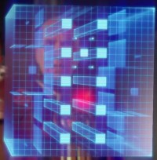
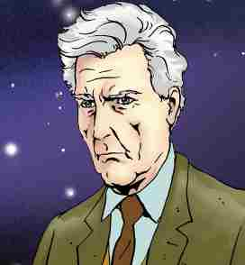
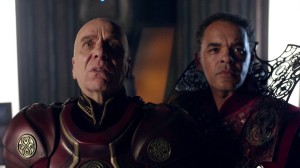
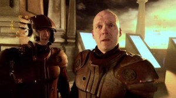
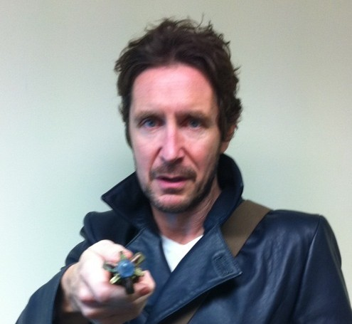

The History of The Time Lords Part VI
THE PRE-WAR ERA
The Oncoming Storm
It was a request they should never have granted...”

TABLE OF CONTENTS

Click on paragraphs to see color coding for sources
THE HISTORY OF THE TIME LORDS PART VI: PRE-WAR GALLIFREY
This Time Line covers the period from the 1996 TV Movie, to the beginning of the Time War. It is set 2,000,000 years after Rassilon assumes power on Gallifrey. All dates are given in Gallifreyan years (which are the same as Earth years) and are based off the age of the Doctor.
Once the Eye of Harmony is anchored, time began moving at a different speed on Gallifrey then the rest of the Universe. The Doctor was born around March 30th, 1213 AD and when Greyjan had served one year as President of Gallifrey (and the Doctor was 753), the Earth date was 1752 AD. This problem was probably corrected when the Nine Homeworlds project was undertaken.
The following information contains many spoilers.
1009
.76
(about 2.5 years before Vampire Science /
Local Dateline
200
5725.2)
Doctor Who: The Enemy Within: The Master is put on trial by the Daleks and exterminated.
The Doctor travels to
the fake Skaro created by the Daleks and collects the remains.
The Master steals
his 16th
body but a human body doesn't last long
when trying to hold a Time Lord.
The Eye of Harmony aboard the Doctor's TARDIS is opened, and both Grace and Chang Lee momentarily gaze into the
Heart of the TARDIS.
This would explain how
both Chang Lee and Grace can instinctively operate the TARDIS:
They were both granted insights by the TARDIS herself (in Chang's case it was a retro-temporal effect).
The Doctor allows
the Master to be sucked into the Eye of Harmony,
knowing that he will become the god of the empty universe of anti-matter he will find there. The Master
is consumed by the TARDIS and
lives within it's singularity with absolute power of that universe.
He will eventually learn how to control the TARDIS to some degree.
The Eye also revives the dead humans Change Lee and Grace Holloway
(making them immortal fixed points in time like Jack Harkness).
Grace is one of the few humans whose future he can't see. The Doctor claims to have never
seen what is beyond death like they have.
The robes the Master wears at the end could well have been the Doctor's robes from when he stole the TARDIS.
The Eye of Harmony being open leaves a temporal cicatrix scar on Earth.
The Eye being opened on the Earth in 1999 AD re-triggered the Time War.
This could be tied in with the elimination of Homo Imago from evolving at that time. Some force or entity
keeps ensuring that the Last Great Time War happens. The Time Lords end up naming this force the Catalyst. Some
speculate that the Catalyst was Rassilon, or the Eternal known as Death, or Matrix, but nobody really knows.
The Catalyst arranged for the TARDIS’ Eye of Harmony to be opened on the Earth in San Francisco in 1999 to help
advance this plan.
The Doctor regenerates for the seventh time.
The Doctor
makes a deal with Life and
becomes Life's Champion
during the regeneration.
The Doctor’s body ‘chose’ to use those morphic fields to make him half human because his body was full
of human medicines that were killing him. They had to find a form that could survive the chemicals, and activating
the Human DNA would work.
While previous incarnations of the Doctor weren't, physiologically speaking, half human,
this incarnation has human retina patterns and some human DNA.
The Time Lords believe that the Doctor has become 'retroactively' human, and the
Doctor believes that long term exposure to human morphic fields is what brought out the 8th Doctor’s human traits.
This incarnation of the Doctor is also vulnerable to the human condition of "romantic love" and tends to be vary frank
about his origins.
The regeneration that causes his molecules to be shaken up so much that
deeply buried aspects of his character are brought to the surface.
He experiences memories of his home and family that hadn't surfaced for centuries.
The Doctor begins to remember being born traditionally and that his mother was a human.
He cannot reconcile his memories of being loomed with his memories of having parents but he believes them anyway.
He doesn't need spectacles to read and thinks that his new body heals faster
then his previous incarnation.
He has a precognitive ability to see alternate futures. These glimpses of possible future are probably
caused by the numerous time spurs that would form during the coming Time War.
Not only does he believe that his previous selves
committed heinous offenses against fashion, he also feels that his 7th incarnation was obsessed with spending every moment
working towards impossible goals. He is glad to be free of his 7th incarnations 'ends justify the means' master-plan
mentality. He feels that's why that version of himself kept ending up alone.
Believing that he has averted the Time War
, the Doctor now feels that he can start over with a new life and enjoy his work He secretly loves the thrill
of risking his life to save others.
He will spend much of his life running. He makes a point of not traveling alone so that he won't forget
the value of the individual. He's not very good at hand-to-hand combat. The reign of
Edward the Confessor is one of his favorite points in history.
He will often visit the Tantalus Eye because of its breathtaking beauty.
He loves dinosaurs, spiders and cats.
He likes jelly babies (particularly red ones). Sometimes he likes his tea with 6 sugars, other times with
no sugar. He rarely remembers his dreams.
The Doctor believes that the forces of Time are impersonal and unthinking, but he prays daily to his gods.
He is not fond of heights, or eating meat, but will put up with fast food cheeseburgers. He hates people
who write in books.
It is possible that that the half-human part of his biology is the the reason that this incarnation of the Doctor keeps
losing his memory. Maybe it can’t hold all the experience of a Gallifreyan Time Lord.
?
A side effect of the Last Time War
(possibly the existence of the Nine Gallifreys)
makes it very difficult to research what events the 8th Doctor actually experienced
1009.5-1012 The BBC novels produced in 1997 occur in this range.
1009
.76
(right after the TVM / Sam is 17)
The Eight Doctors (from the Doctor's POV): The Doctor makes
a deliberate choice to take Samantha Jones as a companion despite the fact that it changes History. The Doctor may be
a living equation or function of the Universe. His unconscious probably has slight effects on the biodata everyone
around him.
Eventually the Doctor's biodata will have modifications that allow it to bend the timelines.
Its possible that his own unconscious reaches out into the vortex and alters history to create a companion who would make
him feel complete. This companion could be Samantha Jones.
?
The Doctor stops being a vegetarian, but tries to avoid eating
anything with a central nervous system. He rarely eats meat.
?
Despite his new "human" emotions the Doctor doesn’t start a
romantic relationship with anyone because he doesn’t believe they should have to put up with his problems. (I.M. Foreman
is an exception to this restriction.)
1009.76-1010.5
The Doctor leaves Sam for about 1 year.
1009.76-1011.5
(2593 AD / has been fighting monsters for 1,200 years / Wosely's age indicates its no more then 11
years from Human Nature)
Dying Days: Bernice Surprise Summerfield accepts the Edward
Watkinson Chair of Archeology at St. Oscar’s University on the planet Dellah.
??
(after the TV Movie / before Shada)
The Doctor meets with Professor Chronotis on Earth in 1955 AD,
1960 AD, and 1964 AD. He gets an honorary degree from St Cedds during his 1960 visit.
?
Totem: The 8th Doctor spends about 9 months working on a farm
and meets his previous incarnation.
??
Mali is loomed from the House of Lungbarrow. She joins the Military
Elite.
??
Kurstelliafastikson (Kurst) of Chapter Patrex leaves the Chancellor
guard and becomes a member of the CIA.
1010.76-1011.5
The Doctor leaves Sam for about 1 year and travels with Stacy
and Ssard for several months.
??
Iris Wildthyme works for UNIT as a Scientific Advisor.
1009.76-1011.5
(before Interference Part 2)
The Doctor builds K-9 Mark IV.
1012
.26 (2.5 years after TVM / about a
year after the Eight Doctors from Sam's POV)
Vampire Science: The Doctor fights Terran vampires. By this
point the Time Lords would probably erase from history any city harboring vampires.
1012 (about 300 years after
Green Death)
The Bodysnatchers: The Mark Five Sonic Screwdriver is destroyed.
1012 (claims to be 1000
/ no more then 6 months after 8 Doctor from Sam's POV)
War of the Daleks: The Doctor thinks he has finished tricking
the Dalek Empire into tangling their timeline so bad that their history collapses under the weight of the Paradoxes.
Unfortunately the Daleks
have actually managed to escape this and
will eventually become the enemy that will be responsible for Last Great Time War
in Heaven.
The Dalek Prime uses Davros as his puppet emperor in part of his plot to fool the Emperor.
1012.5 (6 months after Vampire Science from
Sam's POV / 2 weeks after War of the Daleks all from Sam's POV /
Over 137 yeas before the War)
Alien Bodies(The Doctor): Due to his renegade nature the Doctor
accidentally blunders past the time blockades of the Time War in Heaven and discovers a Time Lord named Qixotl auctioning
off the Doctor's corpse.
Qixotl is also known as Drax
but the Doctor doesn't recognize him at the time.
The Doctor destroys his corpse.
?
The 8th Doctor eventually realizes that his pre-cog powers
are actually glimpses into alternate time spurs created by the coming Time War.
??
The Doctor builds a Mark 9 Sonic Screwdriver.
1012.5-1017 The BBC novels produced in 1998 occur in this range.
?? (while traveling with
Sam)
The People's Temple: The 8th Doctor and Sam observer some of
the building of Stonehenge but fail to notice
the Monk who uses an anti-gravitational lift to help the Britons build Stonehenge
.
Given that this is also where Tannis chooses to attack Earth in DCTT is it possible that something of great significance
to the Time Lords exists at Stonehenge? Possibly the Gravity Control Unit?
1012.5
(Sam has been with the Doctor for just under a year)
Seeing Eye Part 1: INC discovers a Gallifreyan Mind Probe (from
Savar's TARDIS) and uses its retina based technology to create a computer systems composed of the minds of INC's employees
called IXNet.
1013.4
(5 years
after Romana becomes President / 4 years after Lungbarrow /
before Ancestor Cell
/ 2013 AD?)
The Daleks invade Gallifrey but are defeated.

Schematic of the
Slaughter House
1013.5
(right after the Dalek invasion)
The High Council refuses to have a permanent, fully trained,
fighting force guarding the Panopticon. Romana reactivates the Slaughterhouse.
The Slaughter House is located in the
Time Vaults (a stabilized time eddy) hundreds of kilometers beneath the surface of Gallifrey. It is about
the size of Albert Hall and serves as
a stockpile of Gallifrey's deadliest weapons,
both biological and technology based.
Typical Time Lord weapons don’t need to be fired, instead they affect everything within a certain area.
Some of these weapons can destroy millions of people in just a few seconds.
Others, such as Quantum Crystallizers are
a type of probability shredder that effectively alters probability in whatever way is necessary to ensure the
desired outcome.
Inside the Slaughter House is the Omega Arsenal where all the weapons that are forbidden by the Laws of Time are
locked away.
Some of these weapons would trap the target in a time loop of their own death.
Reactivation of the Slaughter House would require reactivation of the Time War Council who have the responsibility
of administering the forbidden weapons in the time vaults.
This might have been the real purpose behind Romana's actions.
1014
(137 years before the beginning of the War)
Work begins in earnest to prepare for the War with the
Enemy. The Time Lords could avoid the War with the Enemy but that would violate the Laws of Time. They've seen that the
war takes place, so averting it would be changing their own "History."
This is the beginning of the Temporal Cold-War.
1014
(137 years before the War / after Alien Bodies / a short time after the first robots)
The 101-Project begins: Research begins into creating a TARDIS
that is capable of interacting on a verbal level with Time Lords. The designation of 101-Form was at the President's
request.
Its possible that the 101 refers to 101ita the Master's TARDIS.
1012.5-1016
(at the end of Seeing Eye part 2 / a little over 3 years after Part 1 / Sam is now 21)
Seeing Eye Part 2: Savar's eyes are found. The Doctor takes
Savar's Eyes back to Gallifrey.
It is possible he spent a year in the TARDIS before picking up Sam.
1016.15~
(according to Sam 3 months after Seeing Eye)
Placebo Effect
??
The Obverse becomes Iris
Wildthyme’s home. There are records of the Obverse in the
Panopticon archives.
(Does this mean Iris has connections to the CIA?)
??
Iris is poisoned by eating a Kaled mutant.
1016.2
The Scarlet Empress: Iris Wildthyme regenerates for the fifth
time.
1016.4~
(4 months after Scarlet Empress from Doc's POV / 2 years after Scarlet Empress from
Iris's POV / before The Taint from Doc's POV)
Femme Fatale: The Doctor and Sam meet Iris Wildthyme again.
1016.5-1018
The Janus Conjunction: The Doctor breaks the Laws of Time
by using a Temporal Orbit to find the time to develop a cure for Sam.
The Doctor could take a side trip in the TARDIS while Sam is healing. This could account for the missing 2 years.
? (the 8th doc)
The Doctor finds his spare Sonic Screwdriver under the console.
? (the 8th Doctor)
The Doctor carries a #3 Sonic Screwdriver.
??
Daedalus becomes Time’s Champion.
He undertakes a plan to destroy the Men of Glass before they become as bad as the Daleks. Using “technology” from the
Enclave he creates a series of Corridors that connect to places through out the universe.
1018 The BBC novels produced in 1999 probably occur when the Doctor is 1018.
1018 (several months before Autumn Mist from Sam's POV)
The Taint.
1018
(right before Dominion)
Revolution Man: The TARDIS realizes it is going to be destroyed
soon and begins visiting Earth at different times near different spacial-temporal anomalies The TARDIS is trying to find
a way to avoid it's destruction.
1018
(right before Unnatural History, Sam is 22)
Dominion: the TARDIS is nearly destroyed.
1018
(right before Autumn Mist)
Unnatural History: Blond Sam is created when Dark Sam enters
the Temporal Cicatrix Scar. The Doctor can't remember who is President of Gallifrey. By this point there are about 32
conflicting bits of history in the Doctor's biodata The Faction Paradox knows the Doctor has been infected with the Paradox
Virus and will join them eventually. The Doctor's TARDIS steals his shadow to warn him of the Faction's interference
with his third regeneration. The Doctor meets Professor Daniel Joyce (a Time Lord Professor from Berkeley who is probably
his father Ulysses) and his assistant Larna. The Scar is affecting the Project. The Doctor seals the Scar.
1018 (The Doctor is 1018)
Autumn Mist
1018
(Right after Autumn Mist / Sam is 22 / 1999 AD / Probably nearly a year after Downtime / Possibly about a year after being
released in Seeing Eye)
Interference:
The
Doctor decides that he will make changes in Earth's political
structures that he knows will create a changes in history and thus a
violation of the First Law of Time. This is a reversal on his long held
stance against interference with Earth's history. For the rest
of this incarnation the Doctor won't believe that its morally wrong to
change your own past, but he does see it as very dangerous,
irresponsible, and risky. The Doctor defeats the Remote and
influences sixteen-year old Sam’s development. A member of the Remote’s
colony on Ordifica, named Laura Tobin (aka Compassion), begins
traveling with the Doctor. The Doctor has Compassion’s receiver hooked
to his TARDIS so that it screens all the signals she receives.
1018
(after Autumn Mist, before The Taking of Planet 5)
The Faction gives the Doctor a false shadow to replace the one
he’s lost to hide the fact that he has bee infected with the Paradox Virus.

Compassion
1018
Compassion’s receiver is still hooked to his TARDIS so that
it screens all the signals she receives.
The Doctor’s TARDIS begins “narrowcasting” its programming to Laura in order to create the 102-Form.
1018
(a few days before the Doctor arrives)
I.M. Foreman creates a Universe-in-a-Bottle using energy from
the Space-Time Vortex. She designs the ecosystems of the various planets but appears to have been inspired by the Classic
Universe to a large degree. She also puts Father Kreiner in the Bottle’s Vortex. This Bottle Universe is (allegedly)
the most valuable object in the Mutter’s Spiral. This Bottle Universe has Time Lords with godlike powers and a Doctor
who is almost identical to the real Universe. The beings in the Bottle Universe create their own Bottle Universe. I.M.
Foreman believes this goes on forever.
1018
(3795 AD / a few days before Interference Part 3)
Two Time Lords from the High Council of Gallifrey visit I. M.
Foreman and offer to purchase her Bottle Universe. They want to use it as a last ditch escape route for the coming War
with the Enemy.
1018
(during Blue Angel from Gallifrey POV)
A team of Patrexians on Gallifrey predict a new development
in TARDISes. The Type 102 which will be the mother of the first Type 103 TARDIS. The Type 102 is a human from the Remote
who had been fed enough signals from the Doctor’s Type 40 TARDIS that she became and entirely new type of TARDIS. She
is capable of communicating directly with 3 dimensional beings (humans) as well as 5 dimensional beings (older TARDISes).
The Type 103’s will be essential to Time Lords during the War with the Enemy.
THE OBVERSE SLIPAGE
The Doctor slips out of Gallifrey's Continuity for over a century of his life. The Doctor's visit to the Obverse might have disconnected him and his TARDIS from his Gallifrey Relative Timeline. Certainly many of the stories that take place after that point seem to have no connection to the protocols of linearity (including Blue Angel, the Doctor's side-trip to the War Era, the Taking of Planet 5, Storming of Avalon, The Ancestor Cell). All of this is very complicated, but no more complicated the “War of the Daleks” and much simpler then the life of River Song, so I don’t think its too much of a stretch.
1018
Blue Angel: the Doctor encounters the Enclave. Iris Wildthyme keeps the Doctor from interfering with Daedalus's plans.
Iris promises him that its for his own good and tells him she’ll explain one day. The detonation of a bomb might have
fractured Daedalus's Corridors so that a races all of the Universe were drawn into a war with the Obverse.
?? (in the Pre-War era from the Doctor's POV)
The Diamond World: The Doctor visits Varos thousands of years
before humanity began mining it. At this point the planet is far lager and composed almost entirely of Zyton-7
ore. Automated Gallifreyan Mining ships from the Time War era are strip-mining the planet. The operation
is being overseen by well armed Time Warriors. The Doctor helps them deal with a creature they find buried
in world.
1018
(before the Taking of Planet 5 /
several hundred years before the Final Battle)
The Day of the Doctor:
The 8th Doctor takes a major side trip after the bulk of the events of Interference.
This was possible because his TARDIS found a loop-hole in the Laws of Time.
He saw the War in Heaven and learned the identity of the Enemy.
The 8th Doctor sets up his TARDIS to work out the calculations necessary to freeze Gallifrey in a single moment
of time.
After learning the identity of the enemy,
the Doctor allows
the knowledge of the War in Heaven to be erased from his memory
but his TARDIS chooses to retain the information.
It takes several hundred years for the calculations to be worked out, but, by the time of the 13th Doctor (if not sooner)
they have completed.
1018
(3795 AD / "Mid-Adventure" from the Doctor's POV /
Several thousand years after the Doctor’s TARDIS is created)
Interference /
Toy Story:
Suffering from amnesia from his recent memory wipe the Doctor meets with I.M. Foreman on Foreman’s World. The High Council
of Gallifrey steals her Universe-in-a-Bottle.
The sentient TARDIS, Lolita, asks the Doctor’s TARDIS to help her fulfill Mother (probably the Matrix)’s plans. She
attempts to convince the Doctor's TARDIS to evolve into a Type 100 form Capsule. The Doctor’s TARDIS isn’t interested
in Mother’s plans and is concerned for the fate of the Time Lords if her plans are carried out. The Doctor’s TARDIS
refuses because she doesn’t like the plan and because she wants to be the mother of Compassion (aka the Type 102).
While Lolita is quite open with the use of her name,
the Doctor's TARDIS keeps her name, Sexy, a secret.
1018
The Taking of Planet 5 : The Doctor meets Time Lords from his future and helps save the Universe. War TARDISes from
the future call Compassion Shub Niggurth (this is the name of the Nestene Consciousness).
1018
Storming
of Avalon (from the Doctor's POV): The last operational Type 40 Time
Travel Capsule (the Doctor’s TARDIS) appears to be destroyed. The
Doctor gives UNIT an official resignation letter - written in High
Gallifreyan. Laura Tobin (Compassion) becomes the first
and only 102-Form TARDIS. Her interior is only big enough to carry several thousand people and she has total physical
control over her passengers. She refers to herself only as Compassion from henceforth.
Compassion, the Doctor and Fitz flee the Time Lords who need Compassion as breeding stock for the coming War.
NOTE: This event occurs later from Gallifrey's point of view.
1018 The BBC novels produced in 2000 probably occur when the Doctor is 1019?
1018
The Fall of Yquatine:
the Doctor installs a Randomizer in Compassion. She temporarily abandons the Doctor and spends decades wandering through
space and time.
1018
The Doctor loses his "fake" shadow and the Faction Paradox Virus starts to take control of him.
1018
(well past his one-thousandth birthday)
(By the end of they Time War they won't have reach the Type 110)
Coldheart
1018
(1898 AD / shortly after the events of Storming of Avalon)
The Banquo Legacy (from the Doctor's POV): The Doctor is trapped
for a short time by Simpson's Artron Inhibitor. The Time Lords (probably from over a century in the Doctor's relative
future) discover the seed code of Compassion's Randomizer and prepare the capture her.
NOTE: This event occurs later from Gallifrey's point of view.
1018
The Ancestor Cell (from the Doctor's POV):
Having been pulled into his relative future by the Time Lords,
the Doctor witnesses the event of the Ancestor Cell (later known as the Battle of Mutter's Cluster). The Doctor and
the Time Lord Technician Nivet are rescued by Compassion (Type 102). The Doctor uses his link with Compassion to upload
a copy of his memories to her data banks. He then deletes his memories and places a very compressed copy of the Matrix
into his mind. The Doctor witnesses the devastation of one of Gallifrey (from his future) at his own hands. The Doctor’s
Type 40 TARDIS (having been reduced to the size of an atom) will need about a century to recover from these experiences
NOTE: This event occurs later from Gallifrey's point of view. For more info click
HERE
A Dip into the Post War Future
Since he appears to no longer be connected to Gallifrey's Relative Time, Compassion takes the Doctor the Post Time War Era to recover from the events of The Ancestor Cell. Thus these events could be considered contemporaneous with the 9th, 10th, and 11th Doctors adventures. For more info on the Post War Era click HERE
1018
(1888 AD / the year Gallifrey is destroyed)
The Doctor is suffering from shock and an absence of memories.
To keep the Doctor and the TARDIS safe during this time of recovery
Compassion takes the Doctor out of the Time War into a Gallifreyan Relative Time where Gallifrey has already been destroyed
in the Time War. The Doctor is dropped off with the TARDIS on Earth in the year 1888 AD. Compassion and Nivet leave
to explore the Multiverse.
1020
(1890 AD /
2 years after Gallifrey is destroyed)
The Burning: By this point the Doctor has lost all of his
experiences and adventures from before his arrival in 1888 AD.
1110
(1980 AD
/ 92 years after Gallifrey is destroyed)
Father Time: The Doctor (whose memories have been
deleted
) adopts Miranda.
~1114
(
96 years after Gallifrey is destroyed)
Iris Wildthyme visits the Doctor (whose memories have been
deleted
) but only confuses him.
1116
(1986 AD
/ 98 years after Gallifrey is destroyed)
Father Time: Miranda leaves the Doctor (whose memories have
been defeated).
1119-?
(1989 AD /
101 years after Gallifrey is destroyed)
Father Time: The Doctor (whose memories have been deleted)
is exposed to 50-100 years of time spillage
1131?
(2001 AD
/ 113 years after Gallifrey is destroyed)
Escape Velocity: The Doctor's TARDIS is fully healed from
the events of The Ancestor Cell. The Doctor (whose memories have been defeated) leaves Earth for the first time in
113 years.
1131-1132?
(113-114 years after Gallifrey is destroyed)
By this point the Doctor tells the Master that there are
only 4 (full) Time Lords (i.e. Time Lords bonded with TARDISes) left in the Cosmos.
1. The Doctor (whose memories have been defeated) and his TARDIS
2. The Minister of Chance
3. The Master (who also escaped) envies the Doctor for being able to destroy Gallifrey. The Master
appears to believe that the destruction of Gallifrey means that he and the Doctor should stop fighting over the universe
- at least until the universe is ready for them again.
4. Iris Wildthyme who never graduated from the Academy but is bonded with a TARDIS.
5. Marnal is still symbiotically linked with the Doctor's TARDIS so there are 5.
1131-1132?
(1782-1783 AD / story lasts 1 year /
113-114 years after Gallifrey is destroyed)
The Adventuress of Henrietta Street: The Doctor writes a book
titled
The Ruminations of a Foreign Traveller in his Element
that is published in 1783. The Doctor encounters the
Babewyns
which are ape like shadows of the Time Lords which live outside human understanding. The Doctor has the heart that
connects him to Gallifrey removed from his chest thus severing his link with the (now non-existent) Prime Eye of Harmony.
It appears that all the other surviving Time Lords also have their hearts removed
(or re-anchored to the Clone Gallifreys).
Sabbath has the Doctor's heart implanted inside himself. The Doctor
makes Earth his new anchor point by marrying the human Scarlett.
However later events will show that the single anchor point of one Time
Lord isn't enough to protect the Web of Time from other time travelers.
?? (after Adventuress
of Henrietta Street but before Camera Obscura and Sometime Never)
Sabbath joins Faction Paradox
1132??
(114 years after Gallifrey is destroyed)
Camera Obscura: Sabbath might be Time's Champion now. He
is working for the Council of Eight, who are trying to become the new Lords of Time. The Doctor begins growing a new
heart (and thus a new connection to the Earth presumably).
1132?
(based on Fitz's age /
114 years after Gallifrey is destroyed)
Zero Time: Without the Time Lords the History becomes vulnerable to Infinite Temporal Flux.
Time can now be re-written in an instant.
Without the Prime Eye or Harmony the universe begins to generate alternate universes for different quantum uncertainties.
The Vortex begins to collapse causing the Web of Time and the Primary Timeline to fracture into
billions of alternate universes - drastically reducing the total lifespan of the Universe.
Reapers now destroy many worlds that develop divergent paradoxical timelines
, while several other lifeforms that live in the Vortex (like the Wraiths) begin to die.
Temporal fallout from the collapse of the 5th Dimension (the Vortex) begins to kill the populations of the worlds it
contaminates.
1132?
(114 years after Gallifrey is destroyed)
Timeless: Temporal fallout from the collapse of the 5th Dimension
(the Vortex) begins to kill the populations of the worlds it contaminates. The Doctor encounters the Time Lords Chloe
and Erasmus who remember him as the Blessed Destroyer. They have been trying to save people from the various fractured
timelines. The Doctor and Sabbath travel back to Event 0 using a temporally active animal named Jamais. Sabbath attempts
to reformat the Web of Time in such a way Human Beings will become linked with the Web of Time making every sentient
a Human and probably making every Human a Time Lord. Unfortunately the people Sabbath is working for aren't really
humans and the Web of Time is reformatted for the Council of Eight. The Doctor's former human companion Anji Kapoor
adopts the young Time Lord Chloe and raises her as her own.
1132?
(114 years after Gallifrey is destroyed)
By this point the Doctor occasionally talks (via a view screen)
to the Master who's essence is still trapped inside his TARDIS.
1132?
(a long time before The Doctor's Daughter
/ 114 years after Gallifrey is destroyed)
Sometimes Never...:
The Doctor's child,
Miranda,
dies.
Sabbath kills himself to destroy the Council of Eight. The only surviving member of the Council of 8 is a crystalline
skeleton named Soul. Soul paradoxically absorbs a new form and information from the 8th Doctor. The Web of Time is
shattered and all possible universes are allowed to exist in their own parallel timelines.
They are separated by the Void. The walls of reality close and it becomes virtually impossible for a TARDIS
to visit an alternate reality.
Soul then take Sabbaths timeship and the Star Killer Vortex Gun and flees with Miranda's daughter Zezanne. They are
drawn to I.M. Foreman's Junkyard and land there in 1963 where they take the names Doctor and Susan.
The loss of his children leaves a massive hole in the Doctor's life that will last for a very long time.
1132?
(114 years after Gallifrey is destroyed)
Halflife: Compassion tries to get the Doctor to regain his
memories. The Doctor does recover a vague idea of what his past is.
1132.2-1132.6?
(this story lasts several months, even if you ignore the 100 years in suspended animation / 114 years after Gallifrey
is destroyed)
The Sleep of Reason: The Doctor voluntarily spends 100 years
in suspended animation to pass the time until he can re-sync with his companions.
But he doesn't count this towards his age.
1132.7?
(114 years, 9 months, 3 days, and 6.3 hours after The Ancestor Cell from the TARDIS's POV)
The Gallifrey Chronicles: Marnal regenerates for the 12th
time and regains all of his memories. He remembers that that the Panopticon always had six sides. The TARDIS's Eye
of Harmony's causing is damaged creating a Temporal Cicatrix Scar. The Doctor looks into his TARDIS's Eye of Harmony,
which is still holding the "echo" of the Master. The ghost of the Master reveals that
(while the casing of the Eye is damaged)
he has the power to restore Gallifrey in an instant and would do so if the Doctor wanted him to. The Doctor writes
the 30,000 word novel
Mansfield Park
in two hours. The Doctor learns that he is carrying the Matrix in his head where his memories used to be. Marnal dies
saving the Doctor's life. The Doctor believes that Marnal is the first Time Lord in 2 million years to die without
having his brain transferred to the Matrix. He plans to find and build a computer that will be capable of downloading
them from his mind. He sends K-9 to fetch Compassion so that she can return his memories once the Matrix has been
downloaded.
The Doctor probably downloads the Matrix to discover that there are 8 other Gallifrey Clones (or maybe K-9 tells him).
With Compassion's help, he travels back into the Pre-War era and gives them the Matrix to create a New Gallifrey.
1026
(30 years before
Shada from the Doctor's POV)
The Doctor places some milk in stasis in the TARDIS kitchen.
1027~
(about 124 years before the War
)
The Faction Paradox begins making its presence know and even
attempt to recruit members of the High Council.
They worship Grandfather Paradox and awaits his return. Some Faction agents cut their arms off. The construct a homeworld
and build warships from the skeletons of the Deamons. The have six warships left.
?? (while traveling with no companion)
Forgotten: Unknown to the Doctor, the mental essence of the Master
escapes from his TARDIS's Eye of Harmony to possess a man named Richard on Earth in 1906 AD.
?? (possibly after the
Curse fades)
Iris Wildthyme and Daedalus have a brief relationship and have
a son.
1023-1050
(-100~ probably less then 150~ before Ancestor Cell)
Vorzarti's son, Eton, is born.
1039-1051 (probably at least 16 years after Lungbarrow but at least a 100 years before Ancestor
Cell)
Mali of the House of Lungbarrow has a son named Ryssal.
The Cult of Morbius still exists at this point, but is composed of little more the immortality seeking mercenaries. There are a few core members who have been driven mad.
1049-1086??
(almost certainly 52 years before Sisterhood of the Flame)
By this point the original Hand of Omega is long gone. Acting
on information from the Doctor in an alternate timeline created by the resurrected Morbius, the CIA prevent the planet
Karn from being purchased by the Zarodnix Corperation. This eliminates the following events from history...
The Second Imperator Presidency
1049-1086?? (52 years before Sisterhood of the Flame)The planet Karn is purchased by the Zarodnix Corporation and The Sisterhood of the Flame is bombarded until they leave the planet. Kristov Zarodnix is probably the richest man in the Galaxy. He buys and sells planets for a living, and collects any artifacts related to the Cult of Morbius. Zarodnix claims he plans to mine Karn, but in reality his is seeking the remains of Imperator Morbius' brain. He recovers a centuries old fragment of Morbius’ brain stem.
1101-1138? (Centuries after Brain of Morbius)
Sisterhood of the Flame / Vengeance of Morbius: Zarodnix is questing for a Time Lord to use genetic fusion. After a warning from the Sisterhood, Gallifrey is quarantined and all Time Lords are recalled all TARDIS. All TARDIS’s without recall Circuits are being collected by the Time Scoop. After capturing Lord Straxus, Zarodnix uses Straxus’s regeneration ability to regenerate Morbius' brain stem and extract the biodata from the brain stem/ He uses the energy of Straxus’ regeneration abilities to regenerate Morbius stem into a full body. Morbius' uses his stellar manipulator to drain the power from Gallifrey's Eye of Harmony to the point where its all they can do to keep the transduction barrier up. Once this is done the Trell attack Gallifrey with missiles to keep them from leaving.
1111-1510?? (10 years after Sisterhood of the Flame / Morbius has just returned from conquering the Earth)
Lord Emperor Morbius conquers thousands of worlds. Despite being recreated, Morbius still needs to drain Straxus’s life force with a gene infuser whenever his weakens. Morbius builds a palace on Karn using the remnants of a thousand worlds. The Doctor deactivates the stellar manipulator. Once the power is returned to the Time Lords they change history and prevent Zarodnix from taking control of Karn, changing the last 62 years of history.
?? (Before the Nine Homeworlds
Project)
Cousin Mantissa becomes the Lady Armorer of the House of Mirraflex.
1050~ (After the Faraway Declaration / but before the Nine Homeworlds)
The Time Lords begin founding several colonies. This will continue
until after the Faraway Declaration.
??
The Time Lords artificially extended the life of their star.
The Doctor (Paul Mcgann)
1056??
The 8th Doctor returns from the Post Time War Era.
He brings with him a complete copy of the original Matrix.
He returns at a point before the Last Great Time War beings.
He plans to use the Matrix files to create a clone world of Gallifrey.
Return from the Post War Era
It
is my belief that, after the events of The Gallifrey Chronicles, the
Doctor traveled back to the Gallifrey Relative Time where he first left
the pre-war era (i.e. when he was 1018 years old). He then enlisted the
aid of the Time Lords of the Original Gallifrey to create a new
Gallifrey as part of the 9 Homeworlds Project. This Gallifrey saw the
resurrection of the Master (or the Magistrate as he will be known), and
possibly Hedin.
It is unclear how many of his memories were regained from Compassion. It is possible that he deleted (or had blocked)
the memories of his own experiences from the Post Time War Era and the fall of Gallifrey I. Certainly he never mentions
them in subsequent stories, and this could explain his believing that he is only 900 years old. For the purposes of
this timeline I will NOT be counting the 114 years and 9 months he spent in the Post War Era, nor the months of wandering
that proceeded it.
Those wishing to see the Doctor's actual age can add ~116 years to the number listed below.
1000~??
The Doctor gets drunk with the Corsair (in his 8th incarnation) and the two of them wake up in one of the vaults of the
Bank of England.
??
The Doctor decides to try to save Gallifrey from his own inevitable
future actions. He can’t change history, but he CAN make sure that the Gallifrey that he destroyed in “The Ancestor
Cell” wasn’t the original Gallifrey.
The Doctor fights the Kings of Space. Afterwards he takes a bottle of Sphinx shaped space containing an entire universe.
? (years before "Dead Romance")
The Time Lords (from the Foreman Universe) acquire a Bottle
Universe from the Doctor and decide to use it as a place to hide their culture from the Gods.
1056
(95 before the beginning of the War /
2059 AD??)
At this point Romana is still in her 2nd Incarnation and there is still only one Gallifrey.
With the High Council’s approval,
the cousins of House Lineacrux quietly arranged for
the crypto-forming of Eight new Gallifrey “Clones” out of existing Gallifreyan Colonies.
The Nine Homeworlds Project
While the crypto-forming is largely overseen by House Lineacrux, the cousins allow other Houses to take the credit for event. Lady Armourer Mantissa is also involved in the project as is the Doctor. The Project involves placing 8 planets into Inner Time and anchoring them to the Web of Time. At least one of the planets that were crypto-formed was inhabited by humans. Each of these cloneworlds was primed with the Laws of Time. The "clones" are to be used as bolt-holes, decoys, and alternative homeworlds because the original is less secure. This brings the total number of possible Gallifreys to nine.
Much of the following numbering is speculative, but this is a key to the various Gallifreys. For example, to differentiate the events on Romana's Gallifrey III, and the Master's Gallifrey VIII this timeline will (from this point onwards) refer to Romana's planet as "Gallifrey III" and the Master's planet as "the Homeworld." While there is no hard data, most Gallifreyans feel that the original Gallifrey fell during the first half of the Time War.
- Gallifrey I - The 'original' Gallifrey destroyed in the Battle of Mutter's Cluster at the beginning of Time War. (see The Infinity Doctors, The Apocalypse Element, the Gallifrey audios, and The Ancestor Cell)
- Gallifrey II - The Gallifrey where Flavia had a long and successful reign (see The Eight Doctors)
- Gallifrey III - The Gallifrey seen in the Big Finish 8th Doctor Adventures Audios (see Sisterhood of the Flame)
- Gallifrey IV - The Gallifrey devastated by the High Council to keep Varnax from seizing control of it. (see Last of the Time Lords)
- Gallifrey V - The Gallifrey destroyed by the Cybermen (see Real Time)
- Gallifrey VI - The One True Gallifrey which Rassilon later rules over (see The End of Time and Day of the Doctor)
- Gallifrey VII - The Gallifrey where the Doctor prevents the Elysian Faction from changing history (see The Final Chapter)
- Gallifrey VIII - The Gallifrey where the Master became War King (see The Book of the War and the Faction Paradox Audios)
- Gallifrey IX - The Gallifrey where the Celestial Preservation Agency (CPA) hire the actor Daland to play the Doctor in a museum (see Omega)
By presidential decree the cloneworld colonies are kept completely out of contact with each other and with the original Gallifrey Officially this was done to ensure that Time Lord society survived the War. However the project was shrouded in secrecy and it is rumored that the original Gallifrey might have been shifted to a new location leaving a cloneworld as a decoy in its place. Such a move could have had a large (but unknown) effect on the History of the Spiral Politic. Officially each cloneworld is occupied by caretaker-Houses but since communication and travel between them is forbidden each one believes itself to be the original Gallifrey and each has it's own Lord or Lady President. Each of the Clone Worlds think the other Gallifreys are merely Dominions of their Gallifrey.
As part of the defense mechanisms these other Gallifreys appear not be connected with the Protocols of Linearity (aka the 3rd Law of Time). Indeed it is possible that a new Law of Time was passed to prevent each Gallifrey's causal nexus from interacting directly with the others. This would mean that any enemy who engaged one of the cloneworlds who then be trapped by the Protocols of Linearity making it very difficult for them to mount an attack on any other Gallifrey (or their agents). Any Time Lord who survived their Gallifrey's destruction would only be able to visit worlds which either had no connection with the War or worlds where it was believed that Gallifrey had fallen. Effectively they would be stranded in the Post Time War era. This is exactly what we see in the 8th Doctor after The Ancestor Cell. Though the 8th Doctor was able to get back into the Pre-Time War era, both after the events of Taking of Planet 5 and again after the events of The Ancestor Cell, so we know it is possible.
The original Gallifrey was probably located 29,000 light-years from Sol, near the center of the galaxy but by the year 2000 AD it was 250,000,000 light-years away from Earth. One of the cloneworlds (probably the Romana's Gallifrey I or Gallifrey III) was put in the originals location. One Gallifrey could be seen with the Griffith Observatory's Telescope on 21st century Earth. These Gallifreys were also scattered through time. Given that these clone worlds are in different locations in space and time there is insufficient data to convert Time Lords dates to Gallifreyan Relative Time in Earth's BC/AD calendar. Some the starting points (ie when they were created and the Doctor was 1056 years old) appear to be as follows...
- If left at its original time zone, one Gallifrey would be at 2059 AD at the time of the 9 Homeworlds Project.
- One Gallifrey could be seen with the Griffith Observatory's Telescope on 21st century Earth. The image depicts Gallifrey before the War started.
- Rassilon's One True Gallifrey starts at ~9,000,000 AD
- Gallifrey VII starts between 48,000 BC and 0 AD (Brax believes this Gallifrey is not the original)
- One Gallifrey might start at 3172 AD
- One Gallifrey might start at 30,796 AD
- One Gallifrey is located at the very edge of time and space.
?? (some time before the
Doctor dies)
Valerian become President of Gallifrey III
?? (before The Eight Doctors)
Time Lady Flavia becomes Lady President ofGallifrey
II. She has a long and successful reign.
This might have been the Gallifrey that the Corsair was assigned too.
1056 (Matrix Date 6776 / around 25
years before Spirit)
Leela has spent about 25 years on Gallifrey
I according to Romana
(possibly this refers to how long Leela has been on this particular cloneworld).
?? (Significantly before Father
Kreiner is trapped in Foreman's Universe in a Bottle / after the TV Movie
/ after the Time Lords begin to prepare for the War
/ probably after the Nine Homeworlds project
/
before the Master is captured by the Enemy)
The High Council of
the Time Lords orders
(one of many) hatching projects that involve
creating clones of
important Time Lords, like
the Master
and the Rani.
This requires sacrificing vast amount of resources.
Using a
biodata extract from the Eye of Harmony in the Doctor's TARDIS, the Time Lords resurrect the Master because
they believe he would be the perfect warrior for the Time War. The Master gains a new cycle of regenerations.
They also could have made clones of Romana among others.
1056
(Matrix Date 6776.6
/ a few weeks before being captured by the Daleks /
95 before the beginning of the War /
not during the 6th Doctor era)
Romana is elected Mistress of the Nine Gallifreys. Romana is
elected President of
Gallifrey
I
located in the Kasterborous Sector. At the time of Romana’s Election the roles of President and Chancellor are combined.
Given that one of the major reasons of the Nine Homeworlds Project is to protect the original Gallifrey by providing potential
decoy, it is unlikely that the Kasterborous Gallifrey is the original Gallifrey. Romana's sudden absence
from the other
Homeworld
s
is explained by a hasty resignation.
Romana keeps the fact that there are multiple Gallifrey's is kept secret from everyone except the High Council at this
point.
Each believes that the others are merely colonies.
?? (before Tides of Time
/ probably after the Nine Homeworlds Projects as most of those Gallifreys still have a Panopticon / possibly before Tides
of Time)
On Gallifrey
VI the Time Lord Luther designs the reconstruction of the Capitol. This includes the Watchtower over the old Panopticon.
During the reconstruction Overseer Luther secretly turns the entire planet into a TARDIS.
1056
(95 before the beginning of the War)
The Homeworld is designated Gallifrey VIII.
A new Time Lord becomes the Head of the Presidency on the Homeworld (Gallifrey VIII). He has fair skin and large black
mustache, and is known for his stoicism. Because their new President is an obstructionist, the High Council refuses to
make any further preparations for the War.



Salyavin and Shada
1056
(from
Salyavin's POV 300 years after Salyavin escaped from Shada / 1979 AD /
after the TV Movie from the Doctor's POV / The first time Romana sees
the Doctor's 8th Incarnation / after Romana becomes President from her
POV / Professor Chronotis has heard all about Romana's future /
Salyavin is probably in his 13th incarnation but has a few centuries of
life left)
Shada:
The Doctor misses Chronotis's mean time and arrives ages late. Skagra
tries to find Salayvin and take over the Universe but the 8th Doctor
stops him. Salayvin is killed and revived by his TARDIS (possibly
making him an immortal fixed point in time like Jack Harkness). The
Doctor returns the Ancient Outlaws to Shada. He also sends a report to
Gallifrey detailing events and claiming that Salyavin is was killed.
The Doctor keeps The Worshipful and Ancient Law of Gallifrey
and sends it back in time to his 7th self.
The Time Lords rediscover Shada.
There are thousands and thousands of prisoners in Shada at this point.
Shada was originally unmanned,
but this would change after it was re-discovered.
1056
(probably right after Shada / the Doctor is barely over 1000 years old)
The Time Lady's Story:
Time Lady ‘Tianna’Eltiannachrisanik of the Department of Administrative Records discovers that someone has forged the
credentials of a High Councilor and used them to access information on renegade Time Lords. They discover that
the Time Lord Handrel has been using the Timescoop to collect ancient monsters (including Vampires) in hopes of using
there DNA to achieve perpetual bodily regeneration. Tianna is infected with the V-Factor and placed in stasis.
1056
(probably right after Shada / before the Time War)
The criminals held in Shada have their sentences changed
from 'To Be Announced' to 'Sentenced In Perpetuity.' Personnel are now assigned to Shada at all times.
There are thousands and thousands of prisoners in Shada at this point.
First Ordinary Selvynkesh of House Ixion, is stationed on Shada as a Mover with Honors. He is a part of War Service in the Discrete Operations department. He is not a Time Lord.
?? (probably after Shada is rediscovered)
Do As I Say, Not As I Do: A newly promoted Cardinal of the Prydon Chapter takes a dozen of her students on an unauthorized field trip to Shada. The timetot Axanar releases a dangerous prisoner in the hopes that the renegade Time Lord will teach him how to meddle in history. The renegade frees many other prisoners. Some CIA agents re-capture and imprison the escaped prisoners.
1056.3
(Matrix Date 6776.7 / probably after Lungbarrow / weeks after
Romana is elected President )
A new crystal containing entropic power is discovered on the
oldest planet in the universe, Etra Prime
(aka Planet One).
It becomes known as the Apocalypse Element and is capable of shredding the raw fabric of space-time in an unstoppable
reaction. As a result of this discovery, the planet Archetryx is host to a Time Treaty of twenty of the greatest powers
in space-time. They include the Time Lords, the Virgoans, and the Monan Host,
and the People.
The Daleks are not invited. President Romana and a diplomatic party of 300 Time Lords represent Gallifrey. Shortly afterward
everyone who arrived Etra Prime vanished into time and space, taking 500 people with it, including Romana.
1056.4
(after Romana disappears)
The President temporarily resumes his position as the Lord President
of Gallifrey
I.
A Male Time Lord becomes the Lord President
of Gallifrey
I.
He was Chancellor when the Doctor was at the Academy.
??
The Master becomes known as the Magistrate and serves as a Minister
on the High Council on Gallifrey I. He is the second highest ranking Prydonian and enforces all the laws from the
Citadel bylaws to the Laws of Time.
?? (before the Doc turns
2000)
On the President's orders, the Doctor becomes a Councilor on
the High Council of Gallifrey
I
, making him the third highest ranking Prydonian. The Doctor (from Infinity Doctors) has a long oval face, aristocratic
nose, high forehead, full mouth, closely cropped hair, and sad blue eyes. He's a little taller than average. The Doctor
and the Magistrate are the only council members under 2000 years old. Unlike other councilors the Doctor has no servant.
?? (before Sirens of Time)
Raldeth becomes Commander of the Watch on Gallifrey I.
?? (after the Time Lords acquire
Block-Transfer)
The Doctor creates a Zero Room and fills it with candles, one
for each year that Patience has been dead.
?
Larna is the Doctor's student at the Academy for a while. Larna
is a Prydonian. She is his favorite aspect of Gallifreyan life at the time.
1056
The Time Lords build several fortresses on Simia KK98 to use
as a retreat for the whole race if Gallifrey is destroyed. It is one of the few colonies that the Time Lords have. The
fortresses appear to be giant towers made of rough rock and are miles high and are in constant contact with the Matrix.
1056 (95 before the beginning of the War)
The Time Lords (from both Gallifrey
and the Homeworld)
construct many new
(formerly illegal)
weapons.
The House of Arpexia develops and produces most of the weaponry for the War.
Romana acquires weapons from many other races. These
weapons are stockpiled within a time vault inside the Slaughterhouse.
Inside the Slaughter House is the Omega Arsenal where all the weapons that are forbidden by the Laws of Time are
locked away. All of these weapons, except the Moment, will be used against the Daleks over the course of the Time
War.
??
The 8 Doctors (From Gallifrey
II's
POV): Lady President Flavia of Gallifrey
II
monitors the Doctor as he meets with each of his other incarnations. Ryoth tries to kill the Doctor. A Committee of Inquire
is started by the Doctor during Trial of a Time Lord. Flavia has regenerated at least twice since the The Five Doctors.
Flavia has had a long and successful presidency and will continue to do so
(probably lasts over 200 years then).
?? (Before Neverland /
2,000,000 years after the invention of the first TARDIS)
On Gallifrey
I
TARDISes are now accepted as weapons of war. Military Elite Technician Nivet (the finest technician in the Kasterborous
Quadrant) maintains these new War TARDISes. In their default state the War TARDISes appear to be gold space ships with
spikes.
?
On Gallifrey I Larna serves as a Technician for the conjunction
of the planets Tarva and Alambil.
1070?
(one year before Infinity Doctors)
The Doctor begins negotiations with the Sontarans and the Rutans.
1071?
(right before TID)
Larna had just graduated at the top of her class as a Junior
Grade Time Lord
1071?
(1000 years after Savar is rescued / less then 2000 years after the Doctor is born / After Invasion of Time /
before Homunculette is loomed
See Note Below / possibly shortly before the Master is captured by the enemy)
The Infinity Doctors: (Patience is 2,000,000 years old at the time of
Infinity Doctors). At this point the Doctor's 'father' is a Professor
at Berkeley. The Time Lords are talking about investigating the
disturbance at Tyler's Folly
(see Down).
Larna and the Doctor develop an intimate relationship. The Magistrate
is left at Event 2. Hedin finishes his 300 volume biography of Omega,
that took him 400 years to write. The leaders of the Rutans and the
Sontarans are revived from death by the TARDIS (almost certainly making
them immortal fixed points in time like Jack Harkness) and two of them
form an Alliance. The Doctor extinguishes the candles in his Zero Room.
Larna leaves Gallifrey I to help with the restoration of the Universe
from the Effect. This will take about 2000 years. Voran becomes
President of Gallifrey. The Doctor decides to leave Gallifrey and
explore the Universe again.
Notes on the Placement of The Infinity Doctors
Explanation of analysis for this placement:I postulate that The Infinity Doctors occurs after the Doctor uses the Matrix to found New Gallifrey on one of the Gallifrey Cloneworlds. (so sometime after the story "The Gallifrey Chronicles")
- Hedin's death in Arc of Infinity is the only real contradiction with this placement. However according to Lance Parkin (author of TID) the Hedin seen in the novel is the son of another councilor who was also named Hedin. This is also hinted at in the book ("[Hedin] was an historian, a mainstay of the High Council, as his father had been before him" pg. 27). And the comment (on pg. 157) "A Hedin was still a Hedin" both support this idea.
- The Doctor is between 1011-1295
- Lance has indicated that TID does not, in his opinion, take place after "The Gallifrey Chronicles" but Lance has also stated that he intended fains fans should place the story where they feel it fits best - so this placement is still consistent with authorial intention.
- Also Larna's appearance in "Unnatural History" might be out of sync. She is probably taking a field internship as part of her academy training (this would be before she met the Doctor). Larna certainly doesn't act like she knows him. On the other hand maybe the meeting IS out of sync. She might be working on repairing the Effect. The Doctor IS very reluctant to contact Joyce and Larna. He might realize that they're out of sync. Maybe Larna's lack of interest is because she realizes he's out of sync and is trying to avoid a paradox.
1071 (Matrix Date 6791 /
10 years before Lies)
Commander Hallan and the President (of Romana's Gallifrey I) visit Devidia. This is Hallan's 42nd visit to the planet.
1071?
(Before the War / probably shortly before the
Master appears on Gallifrey VIII)
A renegade Time Lord (probably the Master) is captured by the
Enemy after an extensive chase/battle. His captors are humanoid representatives of the Enemy and “the first, the many,
and the indivisible.” He is given the time active drug Praxis during interrogation. While under its effect he witnesses
several events including an alternative beginning of the War. The renegade found himself near a prominent chapterhouse
in the mountains of Gallifrey. The Enemy disables the Time Lords with a telepathic attack against the Noosphere. All
the chapterhouses in sight are destroyed by black fireballs (probably a supercharged chunks of the causal nexus
[Web of Time??]
itself). Several stolen TARDISes return to Gallifrey and explode.
Cyborg human Ashla shock troops (created by the Blood Coteries of
Siloportem) arrive through portholes in the sky. The troops
self-destruct if captured. The Ashla capture a Loom and infect it –
causing it to mutate. The Eye of Harmony is neutralized and the planet
is devastated. These experiences are recorded in the Praxis Manuscript
which eventually finds its way (via the human artist Diego Rivera in
1933 AD) into the hands of the Faction Paradox.
The Jewels of Time Alternate Timeline
?? The Jewels of Time: The Master will try to assemble the Key to Time. The Master will kill the Hermit. The Doctor will travel back in time and insure the death of the Master before his plan can begin (a violation of the First Law of Time).
1071
The Master arrives on the Homeworld (Gallifrey VIII) and kills three of the Chancellery guards and confronts the President
about the Enemy. The Time Lords learn of the predictions of the Praxis Manuscript. It is the first detailed prediction
of War that they receive. The President refuses to believe him and forbids the other Time Lords to discuss the possibility
in public. The Master might have given the High Council or the President a set of coordinates of a barren zone of the
formative continuum, 3,500 years after the big bang, and claims this is where the Enemy lives. These coordinates are
outside the Noosphere of a TARDIS's capabilities.
?? (near the end of the
8th Doctor DWM comics)
The Flood: While protecting the Web of Time from the Cybermen
the Doctor is exposed to the Vortex's time winds and becomes one with the 5th Dimension (the Space-Time Vortex). In doing
so he evolves into a transcendental being. He plans to remain in this ascended state but changes his mind when he realizes
that his companion Destrii would die without his help. For this reason he returns to his corporeal form.
1076
(5 years after the Master’s last meeting)
The Master surrenders to the Homeworld (Gallifrey VIII) and
asks to address a Closed Session of the High Council. By this point a list of his crimes take up 2 data coils. The Master
explains that he has evidence of the Enemy's existence. He convinces most of the council members, but the Lord President
refuses to attend the session. After the Closed Session he is given a total pardon and leaves the Homeworld. The High
Council attempts to find a diplomatic solution to the coming war. On the advice of the CIA the President does everything
in his power to stop preparations. However talk of the Enemy becomes popular.
1076
(4 decades before the Faraway Declaration)
The Master begins developing secret offensive and defensive
protocols for the coming war.
?
The few diplomats who escape presidential veto leave Gallifrey
VIII to contact the Enemy, but never return. It is rumored that the Lord President had their TARDISes sabotaged.
The Sirens of Time Alternate Timeline
??
(between Romana's capture by the Daleks and her
rescue in Apocalypse Element)
Sirens of Time: Gallifrey I is invaded by the Knights of Velyshaa. The
entire invasion and the events leading up to it are retro-annulled by
the Temperon.
1076.4
(shortly before the Dalek invasion of Gallifrey)
Tebediatroculozan travels to Verana Delta to monitor the growth of lichen.
1076.4
(Matrix Date 6796.8 / 20 years after Roman goes missing)
The Apocalypse Element: Romana escapes from the Daleks and resumes
her position as the 413th President of Gallifrey
I
. The Daleks attack the Monan Host. The Daleks invade Gallifrey, kill the interim Lord President, and recreate the Seriphean
Galaxy (or Galaxy 17A53) to be devoid to sentient life. The Seriphean Galaxy is a neighbor of Mutter's Stellian Spiral
and is four times the size of Gallifrey's galaxy. Things on Gallifrey begin to "change"
and many will later say that this was the beginning of the escalation of hostility that will lead to the Last Great Time
War.
At this point Type 70s are very well designed (with more capabilities
and better telepathic circuits than the Type 40) and are still
considered "new."
1076.4
(during the Archetryx expansion)
The core of the 3rd moon of Heftafalin becomes temporally unstable.
The entire moon is placed in a chamber inside the Anomaly Vault.
?? (probably after Apocalypse
Element)
The Time Lords create the Doomsday Probe, which can release
5 seconds of accelerated entropy - enough to devastate time through out an entire sector - killing all life.
The Doomsday Probe probably used the Apocalypse.
1076.4
(after Apocalypse Element)
While rebuilding Monan Host from the Dalek attack, the Time
Lord engineers place destructive equations in its hyperspatial links. If the Time Lord's activate these equations it
would destroy the Monan Host. This occurs with out President Romana's knowledge.
1077.6 - 1151?
This is where the 8th Doctor's Big Finish audio adventures probably take place. (An alternative placement would be after
the 8th Doctor's death on Drornid.)
The 8th Doctor's Big Finish Adventures - An Alternate Suggestion
After his death on Drornid the Doctor was resurrected in the City of the Saved. Its possible that all his Big Finish audios stories occurred after he left the City and collected the TARDIS from Drornid. This would explain his claiming to be around 900 years old. Due to the Protocols of Linearity, that would be 'how old' he was by Gallifrey's clocks when he was resurrected in the City of the Saved (the city is founded during the 6th Doctor's era). But why would he quote the age of his 6th incarnation [even if that was the Gallifrey Relative Time he was currently existing in] if he was going to ensure that all his interactions with Gallifrey occur well after that point [after he turns 1018 at the very least]. For the time being I will be placing all the 8th Doctor Big Finish stories in the period between The Apocalypse Element and the beginning of the Time War.
1077.6
(6 months before Neverland)
Storm Warning: The TARDIS performs an Emergency Stop for the
first time in centuries. The Doctor changes history (and violates several Laws of Time) by preventing the death of Charlotte
"Charley" Pollard on the R101
(this is probably a response to the decision he made in Interference).
She becomes a space-time breach that forms a conduit to Anti-Time. In an attempt to stabilize reality from the chaos of
Anti-Time, the Matrix is instructed to store the entire History of the Universe.
The 8th Doctor travels with Charley.
Charley
Pollard is the first companion the Doctor has fallen in love with out
of the last several (possibly all?) non-Gallifreyan companions.
He also thinks she would make a better Time Lord then he does.
?? (before Seasons of Fear)
By this point in his life the Doctor prays to his God (or Gods)
every day.
?? (sometime after being
elected)
Romana is a very popular President for a time on Gallifrey
I
.
1077.7?
Seasons of Fear: The Web of Time is shattered allowing the Nimon
to create an alternate version of history where they assume the role of the Time Lords in the Universe. The Doctor spends
3 weeks with the Abbot of Falsecar. The Doctor ensures that this version of history doesn't come to pass. The temporal
paradoxes created by the Doctor lead to the appearance of a new type of creature which takes the form of Charley Pollard.
1077.8?
Embrace the Darkness: Type 70 TARDISs are still considered new.
?? (After Apocalypse Element / Before Neverland)
The Coalition of the Temporal Powers is formed with the Archetryx
Convention. Among its members are the Time Lords, the Monan Host, the Nekkistani, the Warpsmiths of Phaidon, Unvoss,
Virgoans, and Humanity. The Coalition is based on the agreement that as long as the other powers limit their time travel
technology development the Time Lords will defend them from all temporal attacks. Time Technology Assessors (made up
of representatives of several members) are authorized to investigate any alleged temporal advancements. Independently
assembled commissions of temporal powers oversee criminal trials. Planet Gamma Beta Delta Oblique/00 oblique/97/5
Category Kappa Sigma 4 (aka the Enclave of Gryben) is modified by the Time Lords so that almost any TT Capsule that
enters the Space Time Vortex is forced to materialize there. Grybon has Transduction Barriers
(so it might be located in Inner Time).
They are then trapped under Gryben's transduction barriers until they and their TT Capsule can be assessed. Most
are return to their original space-time zone, but some choose to live on Gryben. Members of the Coalition have complex
navigational algorithms that allow them to avoid Gryben's massive pull. Earth's 20th Century becomes a strictly embargoed
time zone.
1077.8?
(while traveling with Charley)
Solitaire: The Toymaker (the Crystal Guardian) is
outwitted when one of his traps gains awareness and decides to test him.
1077.8
(Matrix Date 6798.2)
Time of the Daleks: The Daleks attempt to build a Temporal Elimination
Device which will allow them to seize control of the Time Vortex, but when activated something goes wrong and the Emperor
and his fleet of 1,700 timeships is trapped in a time loop within the Vortex. By this point the Daleks have used the
information they stole during the Apocalypse Element to create their own Eye of Harmony.
?? (after Romana becomes President /
Probably after Time of the Daleks
/ before Lungbarrow? / Probably after Sisterhood of the Flame /
sometime after the 7th Doctor is sure that he has averted the Last Great Time War)
The Hand of Omega returns to Gallifrey
I
and goes back to hanging around the Omega memorial.
The CIA and President Romana observe the events of Remembrance of the Daleks. Believing Skaro to be destroyed they realize
that this means the possibility of the Daleks becoming will ever become the enemy in the Time War has been reduced ten-fold.
They believe the future Time War in Heaven has been averted.
Romana deliberately choose to let the Dalek menace exist because they unite the other species of the cosmos. The
form of the enemy will keep changing throughout the War. While the removal of the Daleks as a major temporal
power, new enemies will develop and threaten the Time Lords.
But the Daleks are taking steps to ensure that the their planet is secretly saved.
1077.9
(Matrix Date 6798.3)
Anti-Time is discovered. Romana authorizes mission beyond the
Anti-Time Rift to investigate Zagreus using a Class 7c Super Orbital Time Station. This Station has the 8th Door to the
Matrix. Its interior architecture can transcendentally reconfigure itself instantly to meet with the needs of its crew.
This level of control is a new innovation. Another fairly new innovation it has is the ability to partially regenerate
damaged systems
and seal hull breaches.
1078.1
(Matrix Date 6798.5 / Doc claims to be just over 950 / 600 years after the Academy,
6 months after Storm Warning from Charley's POV)
Neverland: Vansell is killed. The Doctor gives Romana back her
Sonic Screwdriver. Doctor materialized his TARDIS around a casket with a critical mass of raw Anti-Time energy. This
prevents Anti-Time from contaminating all of Gallifrey
I
, including the Eye of Harmony and saves of the Web of Time and all continuity from destruction. The Doctor’s TARDIS feels
betrayed when the Doctor throws their lives away in order to save Charley.
1078.0?
(after Vansel dies)
The Patrexies, Lord Narvin
(aka Narvinectralonum)
becomes Chief Coordinator of the CIA. Torvald serves under him.
?
Romana begins writing a story (possibly based on the life of
the Doctor) about a student at a Time Academy named Sigma. His fellow classmate is Louandra and one of his teachers is
Cardinal Louvis.
1078.5 (Matrix date 6798.9
/ 6 Gallifreyan months after Neverland / before Romana meets Leela)
Zagreus: Rassilon keeps the Doctor alive and he and his TARDIS
are contaminated by anti-time becoming Zagreus. Zagreus plans to destroy the Web of Time to make the (Multi?)universe
fit with his view. Rassilon tries to make Zagreus Lord President of Gallifrey
I
so that he can enter the sealed Divergence Universe and destroy them. Rassilon and his Foundry is lost in the Divergence
Universe. The Doctor’s TARDIS discovers how to partially cure the contamination. The Doctor, TARDIS, and Charley
enter the Divergence Universe to ensure that the anti-time within never escapes.
NOTE: Romana clearly has not met Leela in this timeline. But it clearly
takes place significantly after Lungbarrow for Andred. This could be a
result of the mind blocks necessary for the Nine Homeworld Project to
succeed. Or perhaps it is a result of the Foreman Timeline merging with
the Classic Timeline.
The Divergence Universe
1078.5
(right after Zagreus / the Doctor has had a thousand years of life)
Scherzo: The Doctor admits that he once loved Charley. A part
of Charley will literally always be a part of the Doctor, due to the physical bond they shared. There are 9 Galaxies
in the Divergence Universe, but timestream - only the present moment. Eventually the whole Universe restarts and lives
the exact same sequence of events over again.
1079~
(not more then a few months after Scherzo / the Doctor is over 1000 years old)
Twilight Kingdom:
The 8th Doctor travels with C'rizz
1079~
(after Caerdroia / the Doctor says he is over 950 / several months after Twilight Kingdom)
The Next Life: Rassilon builds a
planet for his Foundry and creates the Eutermesans to maintain the
locking mechanism that keeps the Divergents from escaping into the
Prime Timeline. Rassilon has regeneration inhibiting harpoons. He
also has a Dreamweaver that keeps a patients subconscious occupied
in dreamscapes while he heals. The Doctor is reunited with his
TARDIS and, with Charley and Crizz, they escape back into Normal Space.
Rassilon is left trapped there.
1079~
(after Absolution / The Doctor says he is 900 earth years old)
The Girl Who Never Was
??
Medicinal Purposes (Gallifrey's POV): The human, Knox acquires
a Type 70 TARDIS on Gryben from a Nekkistani.
1079.7 (Matrix Date 6800.1
/ 6 months before Torvald attempts to kidnap Cissy Pollard / 6 months before Torvald's first regeneration / after Neverland)
Torvald is stationed on early 20th century Earth for six months.
1080.0~
(after Neverland, right before Andred's regeneration)
A Blind Eye (Torvald's POV): A metamorph hires Arkadian to collect
Cissy Pollard as specimen. The CIA agent Torvald pretends to help Arkadian in order to kidnap Pollard from Arkadian,
and create another porthole into Anti-Time. Torvald plans to use Pollard to blackmail Romana into authorizing the use
of force temporal alteration to delete her presidency and all of her policy changes. Torvald's plan is thwarted by Romana
from Gallifrey's future and his memory of the last 6 months is wiped.
1080.1 (Matrix Date 6800.5
/ before Weapon of Choice / after Neverland / dated 17-11-0-0-5
(possibly 6800.5 17 bells 11th day)
/ while he's a commander in the Guard - after Narvin becomes Coordinator / almost 6 month before Lies / before realizing
that Leela would live for centuries)
Guard Commander Andredloomsagwinaechegesima (aka Andred, aka
Andredosselis) learns that neo-conservatives
(probably headed up by House Lineacrux)
had developed a multistage plot to return Gallifrey
I
to its isolationist policies. Andred tries to learn the identity of the neo-conservatives leaders. He arranges a meeting
between himself and CIA Coordinator Narvin. Narvin realizes this is a deception and sends CIA Commander Torvald to kill
Andred. A fire fight occurs and Torvald is killed while Andred is wounded. Andred deliberately regenerates into Torvald
so that he can infiltrate and influence the CIA (which he believes is involved with the conspiracy). Andred swaps Torvald's
DE with his own.
The genetic copy is such that
Andred is now considered to be a member of the House of Deeptree
instead of Redlooms.
Fearing that Leela wouldn't understand
Andred never tries to contact Leela. As far as Leela and Romana are
concerned he disappears and no trace of him can be found. By this point
Leela cannot return to the Sevateam because her telomeres have become
dependent on Gallifreyan biofields to keep her from aging to death
within a year.
1080.1 (Matrix Date 6800.5 /
right after regenerating)
Torvald (aka Andred) is promoted to the rank of Commander in
the CIA.
1080.1 (Matrix Date 6800.5 /
Right after the death of Torvald)
The death of Torvald triggers a failsafe program that causes
several servitor robots to create the Free Time Movement and try to steal the Timonic Fusion Device from Gallifrey's
Past. The Free Time Movement begins to form on Gryben. It will eventually spread beyond that planet. Its this researcher's
belief that Free Time (and perhaps Torvald himself) were working unknowingly for the Daleks. Certainly the Free Time
Movement develops a life of its own with mysterious employers providing funding and missions for its agents.
1080.3~ (Matrix Date 6800.7~
/ after Zagreus / before the Doctor returns from the Divergence / Leela has lived in the Capitol for "many years" / long
after Andred disappears)
Weapon of Choice:
The CIA believes that a Timonic Fusion Device has been obtained by the Free Time Movement on Grybon. The Monan Host deploys
troops on Grybon to obtain the device. The Time Lords threaten to destroy Grybon (and the Monan military forces). The
Free Time Movement has been manipulated by a Time Lord to discredit the President Romana. President Romana travels to
Grybon and defuses the situation. However she fails to recover the Timonic Fusion Device. Leela is made a Presidential
Body Guard and K-9 is made a Security Advisor. Lord Cardinal Braxiatel claims not know the Doctor at this point.
1080.3~ (Matrix Date 6800.7~ /
after Weapon of Choice)
Square One: The first Temporal Summit (lasting 1 week) is held
between the members of the Coalition to create a Time Treaty. It is attended by the heads of state of the all the Temporal
Powers. This is the first attempt at a temporal summit since the disaster at Archetryx. The real summit succeeds. Romana
gives the Monans the information necessary to remove the destructive equations from their Host World. The Coalition of
Temporal Powers sign the Time Treaty. The temporal powers are the Time Lords, the Monan Host, the Nekkistani, the Warpsmiths
of Phaidon, the Humans, the Princessipality of Yevnon, the Sunari the Virgoans, and the Unvoss. A fake public temporal
summit it held to distract Free Time terrorists. A Monan named V'rell, who is allied with the Free Time Movement, attempts
to sabotage the fake summit. The Time Lady Liaison Officer Hassosak violates the First Law of Time by rolling time back
Time at the fake summit three different times to prevent its failure. She is put on trial.
? A field office from Gallifrey is established on Nekkistani.
1080.3 (Matrix Date 6800.7 /
3 months before Lies)
Taranwynterdastant graduates from the Academy with a Degree
in Security.
1080.4~ (Matrix Date 6800.8~ /
2 weeks after Weapon of Choice)
The Inquiry: There is an inquiry into the Lady President's actions
in the Grybon affair. Inquisitor Prime Darkelandrothur of the House of Jurisprudence (aka Darkel) serves as Inquisitor,
and Lord Chief Coordinator Narvin serves as Valeyard. The data bomb placed in the Matrix by Braxiatel in an alternate
timeline is triggered and (eventually) detonated. Romana makes a minor violation of the Protocols of Linearity
to catch Braxiatel adding to his collection. President Romana and Cardinal Braxiatel violate the Protocols of Linearity
and travel back in time to insure that the Timonic Fusion Device is never stolen by Torvald's servitor robots. They return
to discover that the Timonic Fusion Device that was almost used on Grybon was a fake. The inquiry into the president's
actions is dismissed due to the threat being retro-actively annulled
1080.4 (Matrix Date 6800.8 /
after The Inquiry)
A Blind Eye (Romana's POV): Arkadian summons Romana and CIA
agents and Torvald to a 20th century Earth to show her the actions of a younger Torvald in their relative past. This
is a violation of the several Laws of Time including the first. Leela learns that Andred has been pretending to be Torvald
and filled with anger at the betrayal declares her husband "dead."
1080.5 (Matrix Date 6800.9 /
shortly before Lies)
The Arcalian Taranwynterdastant (aka Wynter) becomes the new
Castellan of Gallifrey
I
. With the High Council's approval Romana changes the Laws of Time. Aliens are once again allowed to attend the Gallifreyan
Time Academy. This time they are allowed access to all the course modules that are taught at the Academy. Cardinal Braxiatel
is put in charge of the
Prydon
Time Academy.
1080.5 (Matrix Date 6800.9 /
7 weeks after A Blind Eye / almost 6 months after Andred becomes Torvald)
Lies: Pandora the Imperiatrix escapes from the Matrix and takes
control of Co-ordiantor Narvin. Darkel releases Andred and tell him to learn everything about the Imperiatrix. Romana
discovers that Narvin is possessed and has the Imperiatrix's partition in the Matrix is closed off. She will be trapped
there as long as Romana doesn't connect with the Matrix. K-9 beings trying to construct a secure partition in the Matrix.
By this point Braxiatel is in regular contact with his other incarnations (in defiance of the First Law of Time).
1080.6 (Matrix Date 6801.0 /
almost a week after Lies)
Spirit: Romana and Leela take a vacation on the Presidential
Retreat World of Davidia (which also services other governments). A flotilla of security ships stay in orbit to protect
whichever governmental leader is recreating there. No TARDIS can penetrate Devidia's Defense Screens without the current
Clearance Codes, which are set by the current visiting leader. A TARDIS from Gallifrey's relative future arrives on Devidia
using Romana's clearance Clearance Codes. It carries Castellan Wynter from the future. He mutilated himself physically
and mentally. He carries an alien pathogen that will be triggered by his regeneration (which he appears to be holding
off by sheer force of will). The TARDIS from the relative future is placed in the Chambers within the Anomaly Vault.
By this point Commander Hallan of the House of Archamindies has been serving escort duty for the Chancellery Guard for
700 years. This is his 43rd visit to Devidia.
1080.6~
(after Spirit)
The CIA captures Aesino, a fractured temporal assassin with
20 billion lives. She is attached to Wynter's TARDIS in an attempt to make the perfect assassin. Unfortunately she is
to unstable and she is placed in the Anomaly Vault.

Braxiatel
1080.7 (Matrix Date 6801.0 /
right after Spirit /
Gallifrey Date 951.3
/
before Dragon's Wrath)
Pandora (Part 1): The commentator for Public Register Video named
Antimon is actually and agent for the Free Time Movement. He gives a regenerative mutagen known as the Dogma Virus to
another member, named Gillestes. This Post-Regenerative Cerebral Mutagen is a virus that hijacks a Time Lord's symbiotic
nuclei and is activated by a regeneration. Once active it make the subject a zombie like being receptive to pre-programed
beliefs of the Free-Time Movement. Gillestes tries to place the Dogma Virus into the Capitol’s Main Water Pumping Station.
At Darkel’s urging, Wynter releases the Pandora Creature from the Matrix, which possess him. The creature feeds on ambition
and greed. The tortured Time Lord dies, but has a fragment of artron energy which can be used to ID a Time Lord. The
identification shows him to be a future version of Castellan Wynter. Braxietal is elevated to the rank of Chancellor.
He is the first to hold the rank of Chancellor since Romana was elected.
1081.0
(Right after the first part of Pandora / Relative Date 17-11-9-0-1.557 / Probably
327 days after Torvald is replaced by Andred)
Pandora (Part 2): Pandora tries to use Wynter to possess Romana.
To prevent Pandora from taking over Wynter tries to poison himself with the Regenerative Mutagen. When this fails he
mutilates his body, and then tries to warn the President by stealing a TARDIS and traveling into Gallifrey’s relative
past. Leela is appointed acting Castellan. Braxiatel tricks the Pandora Creature into trying to possess him. He then
voluntarily takes his TARDIS and goes into exile from Gallifrey
I
to
prevent Pandora from ever accessing the Matrix again. Officially he
loses his title of Lord Cardinal and is exiled for breaking the First
Law of Time. Andred is made Castellan on the orders of Inquisitor
Darkel.
The Ascension Biodata Reset
In order to prevent the Dalek conquest of the Citadel, Romana takes Braxiatel's and combines it with the uncontaminated biodata files from a Gallifrey from an alternate timeline. This allows her to reboot the Matrix and restore it to full operation. With the exception of Romana, and Narvin, this physically and mentally re-sets the biodata of every Gallifreyan on the planet to their status before the Pandora Devastation began. While events throughout the cosmos are not affected everyone is reset. The following events were no longer experienced for most Gallifreyans.??
Darkel begins unknowingly taking the advice of the Pandora entity.
1081.0 (Matrix Date 6801.44 / probably shortly after Pandora)
Leela begins lecturing at the Academy on how to adapt to life on Gallifrey I.
1081.5? (Some time after Leela begins teaching at the Academy)
Insurgency: Valyestriantrilumar (Valyes) takes over as Acting Chancellor and begins running the Prydon Time Academy. Neeloc is a Prydonian student who wants to follow in the footsteps of the Doctor. The human student, Taylor, acquires plans that use the Great Key, but dies when he tries to enter the Caldera to find the Key. Andred is killed in the Vaults by Romana who is under the control of Pandora. Narvin gives Darkel full access to CIA resources to depose Romana. Darkel invokes the Right of Challenge against President Romana. Current predictions indicate the Darkel will win the Electoral Contest. Leela is made Security Advisor for the Prydonian Time Academy. The Prydonians and Patrexies ally with Darkel while the Arcalians wait to see who the winner is. Maxil becomes the new Castellan.
1081.5?
(right after Insurgency)
Imperiatrix: Antimon the commentator for Public Register Video
begins delivering bombs on Gallifrey
I
under orders from Darkel. At this point Darkel doesn't know that Antimon is an agent for Free Time. There is an explosion
at the Academy and a little over 30 students (mostly aliens) are killed. Romana beings contacting the Future Vision
of the Imperiatrix for advice on the future. Under the laws of the Book of the Old Time Romana declares herself Imperiatrix
and announces that she has access to the Great Key. This gives her exclusive and unlimited access to the Matrix and
the timelines of every member of the Supreme Council. She is the first Imperiatrix since Pandora. The Chapters and the
High Council are dissolved. Antimon tries to detonate bombs in the Panoptican. Darkel attempts a coup but Romana has
infiltrated her supporters crushes the attempt. Leela kills Antimon. To stop the Panoptican from being bombed Romana
accesses the Matrix. This allows Pandora to manifest by drawing matter from a biodata imprint inside the Matrix taking
the form of Romana's first incarnation. Darkel and Pandora are arrested. K-9, now infected by the Pandor Virus, releases
Pandora and helps her stage a coup. With the support of Darkel, Pandora assumes the presidency. This starts a civil
war on Gallifrey.
1081.5?
(Between Imperiatrix and Fractures)
Battles are a daily occurrence in the Capitol. Many towers of
the Capitol are destroyed. By this point Narvin has hundreds of years of experience with computer security. The Prydon
Time Academy is attacked and left in ruins. During the attack Striped Pig-Rats infected with the Dogma Virus escape
a lab and begin to spread the virus around Gallifrey
I. This begins what will become known as The Pandora Devastation.
1081.5?
(10 days after Imperiatrix?)
Fractures: 753 people are killed in the first 10 days of Pandora's
rule. Romana destroys the Archive Banks
of the Matrix
(holding millions of years of history records). Romana scrambles the Imprimatur Cortex in the Berthing Bays, preventing
any Timeship from de-materializing. This prevents Gallifrey's Civil War from turning into a Time War. Romana's attempt
to destroy the Artron Forum results in Leela's being blinded. Romana and Leela find Aesino from the Anomaly Vault and
kill her. They set a new base of operations in the ruins of the
Prydon
Time Academy. By this point Skimmers are never used on Gallifrey.
1081.5??
(probably after being exiled / before returning to become President)
Brax eliminates the Free Time Movement. Brax has learned that
the coming Last Great Time War
in Heaven
is more than just rumors.
He also acquires a second hand Time Scoop. Using a variation of the matrix partition fields Brax shifts his entire collection
(and indeed the entire planetoid) a few seconds out of phase with normal time and space.
?? (must be sometime after
Insurgency
)
I Am The Law: Commander Maxil arrests a Prydonian Student for
wreck-riding a TARDIS to the Earth in the 1970s. The student had several 2000 AD Comics and Maxil became obsessed
with the character of Judge Dread. Maxil took the title Dread and became Gallifrey's vigilante judge, jury,
and executioner, starting with the execution of the student. He eventually realizes the Time Lords are the source
of true corruption and focuses his attention on them.
1082?
(Many spans after Fractures? /
shortly after Fractures
/
probably less than 6 months after Fractures)
Warfare: K-9 implants a version of the Dogma Virus in a Staser
that makes anyone who is shot with it completely loyal to the Pandora. He also develops a technological version of the
Dogma Virus. Pandora's forces mount an attack on Romana's base in the Academy ruins but Narvin sets up a matrix partition
to act as a giant forcefield which protects the Academy. Romana confronted Pandora and was infected with K-9's version
of the Dogma Virus. Leela stabs Pandora, killing her body. To ensure Pandora's complete destruction Romana feeds it
to the entity that controlled the Anomaly Vault, trapped both of them within a dark partition of the Matrix, and then
erased the entire Matrix. Romana is severely traumatized by her ordeal and Lord Valyestriantrilumar (Valyes) takes over
as Acting-President of Gallifrey
I
.
The Imperiatix Timeline
?? If Pandora had remained Imperiatrix of Gallifrey she would have won the Last Great Time War with the Daleks.
1082?
(shortly after Warfare)
Appropriation: The Time Lords being growing new TARDISes. The Transduction Barriers around Gallifrey
I
fail causing Gallifrey to be connected with Normal Space and normal Time. The Sunari invade Gallifrey. The Sunari and
Nekkistani declare war on Gallifrey for endangering their students at the Time Academy. After a vote of no-confidence
Romana steps down as Lady President and names her third incarnation as her successor. Cardinal Matthiascivandren (Matthias)
uses legal trickery to claim the title of Vice-President of Gallifrey. A malfunction of the Transduction Barriers destroys
the invading Sunari and Nekkistani vessels.
1082?
(shortly after Appropriation)
Mindbomb: Romana is imprisoned and Matthias and Darkel both
declare themselves candidates for the Presidential Election. The Emergency High Council has all of President Romana's
actions since Pandora escaped (Relative Date 17-11-9-0-1.557) rescinded. This means that Braxiatel is now Chancellor
once again. He returns to Gallifrey
I
(with the Matrix destroyed he can no longer infect it) and claims the position of Lord President of Gallifrey. Brax tricks
Darkel into releasing the last vestige of Pandora inside her own head and it kills her. Brax then steps down and names
Matthias as his successor to be the next Lord President of Gallifrey He does this so that Romana will remain objective
when the time comes to decide Gallifrey's future. Brax then departs Gallifrey.
1082?
(shortly after Mindbomb /
not all that long before the beginning of the Last Great Time War)
Panacea: Romana is banished from the Capitol of Gallifrey
I
.
She returns to the ruins of her House of Heatshaven and lets it burn
down. By this point almost 1 in 9 Gallifreyans have been infected by
pig-rats carrying the prototype version of the Dogma Virus. If the
Dogma Virus continues to spread it will destroy the Gallifreyan people
in a few centuries. It would take thousands of years to find a
proper cure to the Dogma Virus. President Matthias invites
Arkadian to Gallifrey to try to find a solutions to Gallifrey's
economic instability. He makes Gallifrey the very tempting offer of
10,000,000,000,000 credits for their stockpile of temporal weapons that
Pandora created. When the High Council refuses Arkadian offers
Gallifrey the cure to the Dogma Virus for the weaponry. Brax uses
the Time Scoop to steal the Bio-Data Archive of all living Time Lords
as well as Romana, Leela , and Narvin. They are all transported to the
Axis. This is where Braxiatel is keeping his collection.
Brax believes that the Dogma Virus has weakened Gallifrey to the
point where it can not survive the coming Time War. Brax plans to
keep the Bio-Data Archive safe from the coming War. Brax also reveals
that the cure to the Dogma Virus is a mutagen that deactivates the
symbiotic nuclei. This means that there will be no more regenerations
and no more Time Lords. They will cease to be Higher Evolutionaries.
Arkadian plans to sell the temporal weapons to some metal gentlemen
(probably the Daleks) but is killed.
The Dogma "cure" (the Anti-Time Lord Mutagen) is taken back to Gallifrey where is probably begins to infect the populace
turning Gallifreyans into a lesser species.
1082?
(after Panacea)
Reborn: Romana decides to see if one of the 1000 different alternate
Gallifrey might have a solution or serve as a new home for them. They being exploring them one by one.
Romana will later claim to have seen 1000 different universes.
By this point, Romana still has never had any children.
The Axis
The Daleks consider the Axis to be the Time Lord's greatest secret. Whenever a Time Lord is lost trying to create (or prevent) the creation of an alternate timelines the timeline in question is truncated and attached, in a spoke like pattern, to the Axis. The Axis is sealed off from space and time within the nowhere of inter-dimensional space. It is also shifted a few seconds out of phase with normal time. An Overseer from the sideways dimension of Guardus supervises the Axis. The Communications Tower in the Capitol the standard method of communicating with the Overseer and e ven the Coordinator of the CIA is unlikely to have actually visited the Axis. Each of these truncated alternate timelines is trapped in a giant loop. There are portals which allow access to the truncated timelines. While most of the timelines in the Axis are created by the Time Lord meddling, some are produced by other species. Shortly before the Time War there were million truncated timeline stored in the Axis and one thousand versions of Gallifrey. But by the end of the Time War over 100 billion alternate versions of history will have been created.For more information see The Web of Time
Some of the alternate Gallifrey's are as follows...
-
Jonbar Hinge: Since there is no reference to the Sontaran invasion of Gallifrey and Romana never traveled with the Doctor,
it is likely that the events of The Invasion of Time never took place in the alternative timeline.
Instead Leela and K-9 helped the Doctor recovered the Key to Time.
This Gallifrey has capitalist consumer based culture. TARDISes are sold to Gallifreyans who have no symbiotic nuclei. he factory can barely satisfied 10% of the demand. Romana was loomed but never left Gallifrey and never traveled with the Doctor. Andred was married to Romana and had a son. Andred was still in his first incarnation when he died in the insurrection. Their son, Antonin became Prime Usher. Romana eventually regenerates into her second incarnation.
Reborn: Romana visits this Gallifrey at the same point in history as on Prime Timeline Gallifrey. -
Jonbar Hinge:
This is probably a universe where the Doctor became Death’s Champion rather then the Master.
In this version of history, Brax did try to kill the Doctor. But Doctor killed Brax and left Gallifrey to try to undo the damage done by the Time Lords (Probably the Morbius' cult). He was brought back to Gallifrey (possibly after War Games, since he never experience Inferno) and had his history changed so that he regarded his renegade days as a pointless waste of time. He is now the Lord Burner. Leela has altered her own history so that her father was killed when she was young. She became the Interrogator General. Romana is Lady President of Gallifrey. There is a Temporal Intervention Agency. They change History freely to ensure that the Web of Time conforms exactly to their plan. The plan is to restore all alternate timelines to the Web of Time creating the Monoverse. They have even changed Gallifrey’s own history, though this resulted in a 1/3rd of the population of Citadel being rendered non-existent.
Disassembled: Romana visits this Gallifrey at the same point in history as on Prime Timeline Gallifrey. This Lord Burner and the primary timeline Braxiatel are lost in the Void between universes. One of them ends up meeting Bernice Summerfield for the first time. -
Jonbar Hinge:
Rassilon turned his back on Gallifrey and became a vampire to gain immortality. He also turned Lord Prydon into
a Vampire.
My guess is that when Rassilon was experimenting with the immortality virus something went wrong and he was infected.
This would have occurred after regeneration is invented, after Omega's death, and after the transduction barrier is
invented,
but well before the Doctor was born.
Several thousand years before Romana arrives, Rassilon built the nests in the Shadows on Gallifrey. He eventually regained his senses and went to war with the Great One. Rassilon spent his final days building a Great Key. Prydon killed Rassilon shortly after he completed the Great Key to the Transduction Barrier. Rassilon’s final gift, was to polarize the transduction barrier to stop all light.
The Eternal War between the Gallifreyans and Vampires has been fought for centuries. Rassilon left prophecies. The term The True Lords of Gallifrey is in common usage. It looks like some of the Pythian seers, like Cassandra, still live on Gallifrey. Most of the True Lords of Gallifrey are on their last regeneration and only about a decade from starvation. The True Lords create "hounds" by having their people drink measured amounts of vampire, then forcing them to regenerated. This process is repeated again and again. The subject will eventually turn into a hound like beast (with no knowledge or experience) that will be completely loyal to whoever that person was loyal too. This Mal'akh like beast has amazing senses and is the perfect Vampire tracking, hunting and killing beast. Prydon is Lord of Forever. He knew Rassilon fairly well and has access to Rassilon’s Chambers. Arcallia is the son of Lord Prydon. Cassandra the Visionary has two hearts. Masjestrix Borusa is the True Lady of Gallifrey. She witnessed the death of Lord Patrix 30 years earlier when the last of the armies of Southern Gallifrey fell.
The ceremonial armor of Faction Paradox is made of the bones of Vampiric Time Lords. The Faction claims that these are the bones of Gallifreyans from an alternate universe where the Time Lords lost the Eternal Wars. Others claim that the contamination happened in this universe during the Eternal War and thus the bones are also derived from the same universe. The Armor could be the bones of future Gallifreyans who finally (in the distant future) succumbed to the V-Factor in the Immortality Virus. Whatever the source, these creatures were 6' 3" tall and covered in chitinous bone plates and were some of the most resilient creatures the Faction ever encountered.
Annihilation: This is in Gallifrey's past, thousands of years after the transduction barrier was polarized. Narvin is seriously wounded. Leela is mutated into a Mak'ala like creature. This restores her eyes and gives her amazingly powerful senses and strength. Romana alters the polarization of the barriers to so that suns can shine and Gallifrey is cleansed from Vampires. She doesn’t bother to find out if any of the untainted Gallifreyans survived. Romana claims the title Destroyer of Worlds. - Jonbar Hinge: All the Time Lords are simian monkey like beings. Possibly the Constructors of Destiny never interfered with their evolution.
-
Jonbar Hinge:
Rassilon was assassinated shortly before he could complete the Eye. It was lost until only a few centuries
before Romana's arrival.
These Gallifreyans can regenerate, but they do not have proper time travel and are not Time Lords. The layout of the Citadel is identical to the on in the Prime Timeline. The planet's population is over 13 billion. Slavery was never outlawed, but killing a slave is a capitol offense. Every citizen caries a side-arm. These Gallifreyans are working on Phase 4 of Project Rassilon to create an Eye of Harmony (using Rassilon’s notes). Phase 4 is to be completed in about 5 Spans (about 32 years).
Forever: Romana arrives just as this Universe's version of her is assassinated. So Romana pretends to be her and assumes the title of Lady President. At first, Romana decides to give this Gallifrey the power of the EOH so that she can obtain a timeship and escape. She determines that there are 13 billion Krillic are trapped in Eye. In order to safe-guard the Axis, Romana has K-9 deactivate the Axis Portal. This leaves Romana, Leela, and Narvin trapped within the Axis in a truncated timeline.
Evolution: Events begin at the start of this universe's Romana's second term. Romana acquires a copy of the uninfected biodata files of this Gallifrey's population.
Arbitration: Begins nearly a year after Forever, and lasts about 3 days.
Emancipation: Takes place 9 Months after Arbitration.
Extermination: When the Daleks from the Prime Timeline invade this Gallifrey, Romana destroys them and returns to the Axis.
The Daleks have invaded the Axis and used it to conquer numerous truncated timelines. The Dalek’s Coordinator predicts which universes will be viable for conquest. When the Daleks from the Prime Timeline invade this Gallifrey, Romana destroys them and returns to the Axis.
In Zagreus the Doctor saw several alternate Gallifreys that differ from the one in the Prime Timeline. But all of these Gallifrey's followed the Doctrine of Non-Interference. These include...
- A Gallifrey where Sorcery is used instead of Science (possibly the Ferutu Universe)
- A Gallifrey where the High Council is as steeped in blood (probably the War in Heaven) and the world was cursed and the children died. (probably the Classic Universe)
- One of these Gallifrey's had the Doctor as the Traveler.
Other Alternate Gallifrey include:
- A Gallifrey were the Doctor returned and led a bloodless revolution.
- Omega has seen an alternate Gallifrey where there was no Rassilon and the Time Lords were Gods because of Omega. The possibility of this alternative universe might have been negated by the existence of Rassilon in the Prime Timeline.
1083??
(after Panacea / probably a few years before Ascension)
President Matthias of Gallifrey I forces every Gallifreyan with
the Dogma virus to be quarantined.
The Matrix controls the quarantine/incarceration systems for the infected.
The infected are incarcerated in time-locked facilities using forbidden technology from the old times that was
recovered from Shada. Because of his controversial decisions and their consequences,
Matthias
had to retire without naming his successor.
Matthias
underwent several months of self-imposed exile in the wastelands before returning as broken man.
1085??
(while Romana and Narvin are in the Axis)
Omega arrives on Gallifrey and takes on the persona of Adjutant
Coordinator Tauras of the CIA. He initiates the Pre-Cog Program. Time Lords with the power of foresight
(aka precogs) are grouped together to predict the future. Such a program could be interpreted as a violation of
the Laws of Time. The Adherents of Ohm begin growing in power and popularity (probably because Omega is influencing things).
1083?? Mind of the Daleks: The Daleks travel back in time and steal the Matrix secrets from Ravolox, so that they can infiltrate the Matrix. The Daleks invade the Matrix. Their presence partially disables the Matrix because they are drawing power and increasing the virtual entropy. This is slowly killing the Matrix.
1090?? (over 2 years after Reborn / right before Renaissance)
Extermination:
The Daleks have invaded the Axis and used it to conquer numerous truncated timelines. The Dalek’s Coordinator predicts
which universes will be viable for conquest.
When the Daleks from the Prime Timeline invade the alternate Gallifrey that Prime Romana rules, she destroys them and
use their gateway to return to the Axis. Leela and Narvin re-take the Axis from the Daleks and seal all the truncated
timelines to prevent the Daleks from returning to the Primary Timeline.
1090??
(many years after
Panacea
)
Renaissance:
K-9 returns to the Capitol on Gallifrey.
Romana, Narvin, Leela, return to Gallifrey, but ends up inside the Matrix. They meet a data extract matrix projection
of Romana’s future third incarnation who was created by her future self. This Matrix projection has created a replica
of the Citadel inside the Matrix. She claims that she had come back in time to help Gallifrey survive the future
Time War.
K-9 starts trying to communicate with Romana II inside the Matrix.
By this point
Romana II wants the temporal powers to see Gallifrey as the Servants of Time (not Lords), whose objectives are to preserving,
upholding, and strengthening the Web of Time.
1090??
(
right after Renaissance
)
Ascension:
Romana returns to Gallifrey and interupts a Presidential inauguration.
Valyes was probably the president being sworn when Romana interrupted.
At that same point the Daleks insert Slyne (whom they had collected from an alternate Gallifrey in the Axis) into the
Capitol.
The inauguration will reconvene in 3 spans. The Matrix degrades to the point where it can no longer control the
Capitol. Romana is tricked into giving the presidential codes to the Slyne and he uses them to open all
the Matrix Doors simultaneously so that the Daleks can invade the Capitol. Romana uses the Matrix simulation of
the Citadel to permanently trap the Dalek invasion force within a sealed off part of the Matrix. She then use the
back-up
biodata archive that Brax took before leaving Gallifrey. By combining it with the uncontaminated biodata files from
an alternate Gallifrey, they are able to reboot the Matrix and restore it to full operation. With the exception
of Romana, and Narvin, this physically and mentally re-sets the biodata of every Gallifreyan on the planet to their status
before the Pandora Devastation began
(so sometime before
Imperiatrix).
In mistaken attempt to prevent the loss of Romana (who was in fact still alive and in the Citadel), Narvin diverted the 4th Doctor to Skaro at a point before the creation of the Daleks. He then sent Chancellor Valyes back in time to warn the Doctor that that the Daleks could conquer all of time and space. Valyes transmat beam was likely intercepted by the CIA of the 4th Doctor’s era, but, upon hearing Valyes’ warning from the future, Lord Ferain enacted Narvin’s plan.
?? (before Dark Eyes /
probably referring to the events of Renaissance and Ascension)
The Time Lords foresee something terrible in their future
- probably the Time War.
? (probably after Ascension)
Dead Men's Tales, etc: Romana dispatches Leela to track
time breaks on the Earth. She eventually determines that a human named Elliot Payne was trying to harvest all of
the Earth's temporal energy to free his wife from an event horizon.
1098.5 (Matrix Date 6818.5
/ probably 20 years after Neverland)
Romana probably frees the Daleks who are trapped in a paradox.
1099 (while traveling with no companion /
about 900 years after giving up his name)
Spore
1100-1119?
(some time after
The Girl Who Never Was /
almost certainly before the Time War begins / almost certainly after Spore
)
Blood of the Daleks:
The CIA of Gallifrey
IV predicts that a human woman on Earth might become a European dictator that might start Humanity on a galaxy
wide conquest of space. To prevent this, the CIA uses a Quantum Crystallizer to repeatedly adjust Luci Miller's
history to prevent a build up of negative attitudes.
Lord Straxus of the House of Kotris tips off the High Council about this meddling and the Council removes Luci Miller
from Earth (using a perception inhibitor on her to make her forget her experiences with the CIA). They place her
with the Doctor take care Luci Miller and tell him its part of a witness protection program.
The Time Lords set up a shield around northern England in 2006 so that the Doctor can't return Luci home. The also
prevent him from leaving her behind in any other time zone.
The 8th Doctor travels with Luci.
In truth the High Council grabbed the wrong human, and it is Karen Coltraine who threatens the galaxy. By
this point the Doctor regrets not preventing the Dalek's creation when he had the chance.
1100-1119?
(shortly before Human Resources)
The CIA manipulate the Shinx in an attempt to get them to wipe
out the Cybermen on Lonsis. They secretly use a quantum crystallizer to ensure the Cybermen can't win the battle.
This device
is a type of probability shredder that effectively alters probability in whatever way is necessary to ensure the
desired outcome. The High Council learns of this unauthorized interference both the CIA and the Council agree that
none of their people will travel to Lonsis.
1100-1119?
(as of Human Resources)
Human Resources: The CIA uses a quantum crystallizer to repeatedly
adjust Luci's history to prevent a build up of negative attitudes.
They have done this to the point where she would be dangerously unstable if she is placed too close to a quantum
crystallizer. For this reason they pull her out of time.
By this point the TARDIS hasn't had a functional state of temporal grace for years.
1101-1120?
(centuries after the Doctor's mid-life crisis from the Dr's POV - probably refers to his third incarnation)
Max Warp
1101-1120?
The Skull of Sobek: The Doctor claims that he’s not anybody’s
champion.
1101-1120?
(10 years before the end of Vengeance of Morbius)
Sisterhood of the Flame
1102~ (about 100 years before the war
/ after the rival Cardinal affair is dealt with)
The Faction Paradox sets up on Drornid.
Faction Paradox begins recruiting Lesser Species.
Initiates have their biodata rewritten by the Faction Virus so that they have a human-plus rating.
Members of Faction Paradox are sterile. Cousins of the Faction’s can Vortex Walk through time, but it takes
a very long time from the traveler's POV.
Little Brothers, and Sisters of the Faction are trained in 4 dimensional guerrilla warfare.
Hurricanes that have names can develop enough of a public perception that they can be ritualistically ‘talked to’ and
‘hired’ by the Faction.
Many Faction Paradox agents have no shadow.
?? (early in the organization's history
/ probably before becoming corrupt at Drornid)
At this point the
family of
Faction Paradox considered it to be very important to give even their enemies the proper funeral rites.
1111-1130?
(possibly ends 10 years after Sisterhood of the Flame)
Vengeance of Morbius:
The current Co-ordinator of the CIA on Gallifrey
III is Lord Bulek. The Doctor feels that Bulek was doddery even when he was the Doctor's age.
In an alternate universe
Morbius has trapped the Time Lords on Gallifrey without access to the Power of the Eye of Harmony. Once the Doctor
restores their power, the Time Lords travel back in time 62 years to change history by prevent Zarodnix
from purchasing Karn. This changes the last 62 years of history.
The Doctor,
Straxus, and Luci all carry memories of Morbius' empire. Morbius is killed by falling into a chasm but the Doctor
manages to use the remote activator for the manipulator to transport himself to the planet Orbis.
The activator for the Stellar Manipulator sinks to the ocean floor of Orbis.
The activator resembles a medallion. The Sisterhood give the Doctor's TARDIS to the Headhunter. By this point
the Doctor's TARDIS no longer has a Recall Circuit.
The Doctor spends decades helping the Keltans of Orbis.
1111-1130?
(before Night of the Doctor / after Vengeance of Morbius)
The Sisterhood know that the Doctor will one day return to
Karn.
~1115? ~208 AF? (900 years before The Doctor, The Widow, and the Wardrobe)
The TARDIS probably gets a new TARDIS lock. This new
lock can be picked by a pin
(if the TARDIS is willing?)
1116
(40 years after the Master's previous visit)
The Master returns to the
Homeworld (Gallifrey VIII). His current body is that of a very old man.
The Chancellery Guard captures him before he could leave his TARDIS.
The Master is imprisoned in the Hall of Addresses.
1116
(35 years before the War begins)
The Head of the Presidency leaves
the Homeworld (Gallifrey VIII) with another Time Lord and several
guards on a five day mission to establish the Faraway Colony at the
coordinates (probably) given by the Master as the home of the Enemy.
The Master’s execution is scheduled in five days. Academician Ambits
serves as President in his absence.
1116 (5 days after the President leaves)
The Faraway Declaration occurs when the President's head materializes
(to the sound of a Timeships dimensional stabilizer) with the message “We are not amused” in the head’s mouth. (Probably
using Praxis) the head had been kept alive for the entire lifespan of the universe before being killed and returned to
Gallifrey. The Time Lords formally acknowledge the Enemy as a rival power.
1116?? (when the preparations for war formally being? /
before the Time War starts)
The Dark Days of Gallifrey begin.
?? (possibly after Death Comes to Time from
her POV? / a fair amount of time before Intervention Earth)
Ace begins working for the CIA and Romana on Gallifrey.
Due to several alterations in her timeline she will eventually longer remembers how or when she came to be there.
She has her own TARDIS and Romana ensured lot of freedoms not granted to regular Time Lords. A
ce does a lot of interventions where she prevents worlds from developing time travel. The CIA like her because she
is human and gives them plausible deniability. Secretly the CIA leadership consider her to be their best agent.
Could this be the Cone Ace from the story Lungbarrow?
1116 (6 days after the President leaves)
The weak-willed male Time Lord Academician Umbaste becomes the
Lord President of the Homeworld (Gallifrey VIII). The Master is made a member of the High Council. Preparation
for the War begins in earnest.
1116
The CIA begins to make plans to become the Celestis because
they think the Time Lords might lose the War.
?? (before Dark Eyes /
possibly during the second Morbius Crisis?)
The Time Lords test a new weapon on Shrangor that stops the
regenerative process using retro-genitor particles. This prevents any Gallifreyan from regenerating anywhere on
this world.
1098-1119?
(20 years before Nevermore)
The Earth military release a biological weapon knows as the Red
Death on Corinth Minor. This weapon is so dangerous that the planets population ends up asking the Time Lords for
help to deal with it. The Time Lords pass the planet through a cloud of super-violet radiation to sterilize it.
The planet is renamed Nevermore and becomes a memorial on the futility of war. For his part in Red Death,
General Morella Wendigo is imprisoned on Nevermore.
1120
(32 years before the War)
As part of the mobilization the first Academician for Game Logic
is appointed.

Devonire
1121?
(a few decades before the War)
On the Homeworld (Gallifrey VIII) the Academicians for Game
Logic invent Postmodernism. This forms the core of the most rapid advancements in Time Lord civilization in millions
of years. Devonire is one of the first Academicians. He is also one of the Homeworld's greatest diplomats. He becomes
known as the Reconciler.
? (before Storming of Avalon)
The Time Lords continue to be worried about the People.
? (before the Celestis)
The event of the War interrupts the CIA’s experiment with the
Fendahl Predator. It is allowed to evolve beyond the planed cut-off date. The Predator continues to evolve until it is
powerful enough to destroy the entire Universe in a day.
?? (decades after learning
that the enemy is capable of fighting them)
The Time Lords finally get over their shock about learning of
the existence of the enemy.
?? (before Storm of Avalon / after the Cloneworlds
are created)
Romana is given the title War Queen of a Gallifrey
I
located in the Kasterborous Sector. By this point the existence of the Cloneworlds are know to the people of Gallifrey
as is Romana's title as Mistress of the Nine Gallifreys.
The Third Romana (Juliet Landau)
?? (before Shadows of Avalon / before Luna Romana
flash-forward)
Romana regenerates for the third time. She acquires the Prydon
Seal on her ankle.
One of Patience's bodies also has a Prydon Seal on her ankle.
This new incarnation is much less pro-intervention, and tends to keep Gallifrey isolated.
?? (sometime before Intervention Earth)
The people of Gallifrey believe that Leela betrayed Romana.
??
(right
before Intervention Earth)
Omega probably steals the Hand of Omega from Gallifrey’s armory
and takes it to Earth, where he uses it create the singularity. Using it some humans create a singularity
appears in Mutter’s Spiral that is growing exponentially and draining energy from the Universe. The High Council
fears it could threaten the entire fabric of space-time. The walls between universes are collapsing. Every
version of Alternate Time that the Precogs gaze into shows Gallifrey falling. Romana issues a presidential write
that prevents the CIA from interfering with the anomaly.
?? (Romana has only 1 term left in office
/ its been a long time since there was a crisis on Gallifrey)
Intervention Earth: Rexxendrogan (Rexx) is an adherent of Ohm.
He uses Ace’s link with the Hand of Omega to open a time bridge to the antimatter universe. Omega uses this link
to seize control of the body of the Time Lord Rexxendrogan (Rexx). Omega leaves Romana, Narvin, Ace, and Lukas behind
in the universe of antimatter and escapes into Normal Space. While Lukas holds the time-bridge stable, Romana and
the others pursue him, killing Romana’s TARDIS in the process. Braxiatel rescues them. Using Rexx’s body,
Omega travels back into Gallifrey’s recent past and begins working as Adjutant Coordinator Tauras in the Capitol. By
this point, Narvin has been in this body for several centuries at least.
? (near the end
of the Doctor's 7th incarnation for the Doctor / after Ace starts working for the Time Lords from Gallifrey and
the Master's POV)
UNIT Dominion: Using Chancellor Goth's TARDIS
the Master acquires the technology of the Dimensioneers and attempts to ensnare the Doctor.
Straxus of the House of Kotris regenerates.
1125 (370 years after Underworld /
2136 AD??)
The P7E returns to Minyos II with the Race Banks.

1130~
(decades
before the war / probably when the Daleks invade / after the Faraway Declaration)
The House Military begins to form after several Houses argue
that the Watch and the Chancellery Guard are an inadequate defense force. Under the guidance of the Master, the House
Military takes the form of an intimate and exclusive group of the more aggressive and pro-active Houses.
This army
is commanded by the Time
War Council.
The War Council is distinguished with a different type of ceremonial collar.
The standards for becoming a Junior Time Lord are reduced so that recruitment quotas can be met. Warriors receive
only basic training in temporal theory and TARDIS operation. Training now takes less then a century. It
is organized into divisions based on time of creation rather then the specialty of skill or field of operation. Each
generation is called a Wave. The events of the War are numbered by the number of the Wave involved in them.
A Strike Force is made up of 12 Regen-Inf warriors.
1130~
(a few decades before Shadows of Avalon)
The looms of Gallifrey
I
are put into maximum production (and beyond), to produce as many Gallifreyan Warriors as possible.
By the time of the Final Battle there will be 2,470,000,000 children on the
final Gallifrey.

? (Before the War begins)
The First Wave of the House Military is produced. It is made
up of Time Lords and Gallifreyans, many of which had served in the Watch or the Chancellery Guard. The newly loomed were
designed to be mass produced, disciplined, regimented, and uniform. Cousins of the minor Newblood House Xianthellipse
warn against this uniformity.
?
Ryssal of the House of Lungbarrow joins the Chancellery Watch
on Gallifrey
I
.
1130 (223 AF)
Het Linc becomes the City of the Saved’s ambassador to Gallifrey
VIII.
?
Ryssal of the House of Lungbarrow regenerates for the first
time. His new body has malformed teeth.
1132 (225 AF)
Het Linc convinces many Gallifreyans to defect to the City of
the Saved. Unfortunately they are rejected by the City Council and forced to leave. It is possible they become
the City’s Secret Architects. Het Linc’s position as ambassador is abolished.
1132
(shortly before becoming the Celestis)
The CIA steal the technique of memory cloning from the enemy
(this is probably the mind probing tech used on the Doctor in Resurrection of the Daleks).
1132 (a few days before the CIA becomes the Celestis)
The Academy that served as the primary recruiting source for
the CIA withdraws from the Academic Roster.
1132 (19 years before the war)
Fearing destruction
and erasure
in the War, the Celestial Intervention Agency
of the Homeworld (Gallifrey VIII),
creates Mictlan, a cyst of galled space-time cut off from the Time Winds. It is constructed of block transfer engines
and computational matrices. Mictlan becomes a danger because it could attract the Swimmers to the Multiverse.
Using the same technique as Grandfather Paradox
the CIA erases itself from history and changes itself into conceptual thought patterns (using the Faction's
Force Paradox
technique) right before the war and escapes to Mictlan.
It is possible that they enlisted the aid of one of the Godfather, or the Lieutenants of the House of Paradox. This removal
also removes the Academy that had withdrawn a few days earlier. The non-CIA students and faculty are probably used by
the Celestis to create the first conceptual entities.
Once there they rename themselves
the Celestial House or
the Celestis and set up the Last Parliament.
The Celestis views themselves as raw and terrible gods of war.
Their agents are known as Archons. The Celestis use their Mark of Indenture to recruit numerous lesser species
to worship them. The Time Lords view the CIA as criminals and traitors. Investigator Four is one of the CIA agents who
journey to Mictlan (he would have been killed otherwise). He takes it upon himself to keep an eye on the Celestis. The
Celestis is split between remaining neutral, supporting the Enemy and supporting the Time Lords. Time Lords who
encounter the Celestis Investigators usually flee in terror or end up dead.
? (by the time the Time War begins)
By this point all TARDIS Types
older then the Type 59 have been decommissioned. While
earlier types can be still be found in transport museums, anything
before the Type 30 is virtually impossible to find anywhere.
??
(
after the Master is cloned)
The 101 Project begins.
Lolita (like the Doctor’s TARDIS) was unique because she was a hybrid. She is only half TARDIS on her Mother’s
side made them unique.
As part of the 101-Project
Lolita has the Master make special changes to her heart so that she can fulfill her destiny to evolve into a humanoid
form. Lolita is the only 45-Form that does this. The changes were part of Mother (probably the Matrix)’s plan.
1132 (19 years before the start of the War)
The 101 Form is slowly programmed
with biodata waldoes as it developed. This TARDIS is designed to be
"sentient." it survived birth but was a screaming terrified ship that
was completely beyond the Time Lords control. The 101-Form is regarded
as the first Renegade TARDIS. Officially it believed to have been
destroyed but it might have been imprisoned or escaped.
The 101-Form might be Lolita.
1132?
(After the Master modifies her heart)
Lolita is planning to reveal her abilities to the Time Lords when circumstances are such that they can't stop her. It
is at this point she plans to take control and fulfill Mother’s plans. Lolita is at least partially responsible for getting
the Time Lords into the Time War.
By this point Lolita is no longer traveling or linked with the Master.
1132?
(forecasted in The Quantum Archangel)
The Type 94 War TARDIS is created.
1132 (382 years after Deadly Assassin /
2,000,000 years after the invention of the first TARDIS /
18 years before the War)
On the Homeworld (Gallifrey VIII)
TARDISes are now accepted as weapons of war. Because of the failure of the Type 101,
work begins on the Type 90 War TARDIS. These
are the first military TARDISes ever built. One of the reasons the Time
Lords never created War TARDISes before was that they didn’t want to
give destructive capabilities to an incomprehensible intelligence.
These capsules look at everything strategically, and view every time zone as a potential battlefield. They follow
their Time Lord's instructions to their own (and his) destruction if necessary. In their default state
the War TARDISes appear to be gold space ships with spikes.
?? (after Shada is rediscovered
/ probably while the Type 90 is being designed)
Murder Most Temporal: At an Time Lord Observation Timestation
(probably Zenobia) the CIA begins testing a prototype Temporal Vector Eliminator. This device is designed to delete
its target from history, but instead shifts the entire time station out of phase with Gallifrey Relative Time by about
24 hours. A member of the High Council investigates this research and is secretly killed by the CIA. This
technology could be used to breach Gallifrey's past.
?? (millennia after the
last Type 53 is decommissioned / while frantically preparing for possible crisis / Gallifrey faces its darkest hour
/ after Romana regenerates for the 2nd time)
Luna Romana:
All trans-dimensional berths are going to be used for the new generation of battle TARDISes.
As part of these preparations, the Time Lords will need every maintenance level and
the quadrigger banks are finally decommissioned. Romana personally oversees this to remind herself why she is leading
Gallifrey into war.
By this point Romana has seen a thousand universes.
1132~ (the same time as the 101-Form is completed)
The first Type 91x TARDISes
(prototypes for the Type 91) are created. These TARDISes have a minimal
awareness of humanoid life. Their default shapes are deliberately large
and eye-catching usually appearing to be gold space ships with spikes.
They often assume the appearance of cathedrals.
They have Vortex Rams (for entering and leaving time spurs and eddies),
Artron Pattern Recognition Analyzers (for detecting cloned duplicates), Temporal Airlocks (for linking up with other
TARDISes while in vortex).
1140
(390 years after Deadly Assassin )
The mafia organization InCorporate sets up operations on Dronid
to sell the Gallifreyan technology left over from the rival Cardinal affair.
Incorporate is actually gathering intelligence for the Enemy. The organization gains power and the only criminal powers
that don't join it still adapt to work by its philosophy.
1141
The Time Lords attempt to alter Dronid's history and discover
that the Enemy has crystallized its past into their own Web of Time.
At the start of the War carefully developed plans and sublte manipulation was the preferred tactic of the CIA.
1141.9~ (400 years after Deadly Assassin / slightly less then 10 years before the
War)
Realizing that InCorperate is an intelligence gathering group
for the Enemy the Time Lords have an Interventionist take control of the local Faction Paradox gang. The gang war of
alliances and conceptual warfare that results is a small scale model of the future War in Heaven.
1142
(392 years after Deadly Assassin /
before the loss of their homeworld, 2000 years before the founding of Anathema)
The Faction Paradox becomes corrupt and starts dealing in arms,
slaves and other criminal activities. They begin selling Time Technology to any race that can afford it. The Time Lords
learn that the Faction is selling Time Lord technology to other species and destroy the Faction’s adopted planet.
Shuncuker is the last scion of the Faction, the daughter of all four of the Grandfathers lieutenants, and the last person
to escape the destruction of the Faction's Homeworld.
She is eventually captured by the Time Lords and imprisoned on Shada.
The few family members who escaped the attack scatter through out space and time.
Some of the survivors relocate to the Eleven-Day Empire.
They continued to sell Time Lord technology but secretly through cults such as the Order of the Rectangle, the Black Sun,
and The Luminus. The Faction makes the Eleven Day Empire its new home.
While the Faction has thousands of cousins,
only
630 Faction Mother and Fathers live at Eleven-Day Empire (September 1752 AD).
In the absence of the Grandfather, Godfather Morlock holds the title of Acting Emergency Speaker of House Paradox.
The children of the Faction are raised in The Loop. The Loop is made of a single second from the 11 Day Empire
that has been endlessly looped back on itself. It serves as a safe haven for children and young teens. The
children’s parents will live within the Loop, while raising them.
1142
Massive anomalies are occurring in the time lines and temporal
pulses begin washing over Gallifrey
I
. As a result most of the Gallifreyans begin believing in superstition and magic. The Initiates and Junior Time Lords
on all of the Nine Gallifreys begin secretly joining cults. The Faction Paradox, the Devotees of Apeiron, and the cult
of Eutenoyar are particularly popular. Others include, Ferisiz, Thrayke, Sabjatric, Rungar, the Pythian Heresy, Klade,
and the Legend of Cuwirti.
1142??
The Time Lords (probably the Matricians) of Romana's Gallifrey
I
begin
receiving visions of an alternity (alternate history) where all but 5
Time Lords have been reduced to apes that live on the edges of
humanities perception of Time itself. Most Time Lords interpret
this vision as a symbolic representation of the their own reality.
The idea that this might be a prediction of the future is
literally unthinkable. Some become consumed with this vision.
The Doctor spends decades helping the Keltans. The Doctor begins to forget everything that happened to him before arriving on Orbis. (If he hasn't done so already) The Doctor looses complete track of his age.
1117-1136?
(spends 600 Orbis years with no memories / probably at least 300 years? / possibly 2 years before World
Wide Web / before Dark Eyes
)
Orbis: The Doctor's sonic screwdriver is rusty and doesn't
work well. The Headhunter brings the TARDIS and Luci to Orbis and the Doctor begins traveling the Universe again.
NOTE: Do to constraints on the Doctor's timeline, 600 Orbis Years probably is unlikely
to be more then 25 Gallifreyan years. Alternately all of the Big Finish adventures take place after the Doctor's
resurrection in the City of the Saved.
1117-1137?
The Beast of Orlok: By this point the Time Lords are policing
policing illegal biological technology in addition to temporal tech.
1117-1138?
(possibly 2 years after Orbis)
The Eight Truths / World Wide Web: Lucy gets to hear the
thoughts in the Doctor's consciousness while she exists inside the TARDIS systems.
1117-1138?
(After Death in Blackpool)
Earthly Child:
Desperate for some help with the reconstruction of human civilization. The TARDIS detects Susan's request
for help and the Doctor meets up with Susan and his grandson Alex. He offers to have Alex trained at the Academy
on Gallifrey but Alex chooses to stay with his mother. At the Doctor's suggestion, the Iborians begin helping
Earth rebuild.
1118-1139?
(right before Nevermore)
Situation Vacant:
The 8th Doctor travels with Tamsin
Drew. Luci becomes the Monk's traveling companion. The two of them will have several adventures together.
1118-1139? Nevermore: The Time Lords (probably the CIA) use a CAT (Calculating Animal with a Tail) to divert the Doctor's TARDIS to Nevermore (aka Corinth Minor). The Doctor releases General Morella Wendigo and stops the mutant shadows there. By this time the Doctor believes the Master is dead.
1118-1139?
(sometime after the Monk regenerates / many years after The Time Meddler)
The Book of Kells: The Monk time scoops the Doctor's TARDIS.
Using the Monks of an abbey, the Monk has fashioned a new directional unit for his TARDIS.
1118-1139?
(right before Deimos)
The Monk changes history on Crestus by killing two people
in an avalanche. Luci realizes what a monster the Monk really is and demands he take her back to her own time
zone.
1118-1139? Deimos/The Resurrection of Mars: Tamsin Drew becomes the Monk's new traveling companion. The Monk decides to form an alliance with the Daleks to stop the Doctor. The Doctor believes that the destruction of Halcyon by the Ice Warriors (and the resulting 20 billion deaths) in the 33rd century is one of the greatest tragedies in the history of the universe.
1118-1139?
(
Alex is 18 / 6 months after Earthly Child / probably no more then a few years after Legacy of the Daleks from Susan's
POV)
Relative Dimensions: The Doctor and Luci celebrate Christmas
with Susan and Alex Campbell. Lucie leaves with Alex to see the Earth of the 22nd century. The Doctor stops
saving all the rooms of his previous companions on the holding ring, and deletes them all. He does save a room
for Alex and plans to give him his TARDIS at some point in the future.
By this point the Doctor has had roughly 50 traveling companions (so his name probably has about 50 sylablles).
1118-1139?
(after Relative Dimensions / 6 years prior to Prisoner of the Sun)
The Doctor is imprisoned by the Consensus. He spends most
of this time wearing pajamas.
1124-1145?
(6 years after being imprisoned)
Prisoner of the Sun: The Doctor escapes from the Consensus and
discovers that Alex Campbell left him a message begging him to help Luci and the people of Earth.

The Doctor
1124-1145?
(right after Prisoner of the Sun / takes 3 years from Alex's POV)
Luci Miller / To the Death:
With the help of the 22nd century Daleks, the Monk will recovered the Dalek Time Controller.
The Daleks invade Earth again. The Dalek Time Controller has discovered a point in space-time when all of the Amethyst
Viruses will concentrate into one cloud. The Daleks of the 22nd century plan to install a time warp engine on the
Earth so that they can use it collect and transport the Amethyst Viruses. They will then be able to infect and
destroy all life on any world they wish. The Monk is working to save all of Earth's greatest artifacts so that
the can become the richest man in all of creation. Susan doesn't recognize the Monk.
Alex Campbell is exterminated by the Daleks, and Lucie Miller dies destroying the Time Engine the Dalek’s were trying
to place in Earth’s core. The Daleks kill Tamsin and the Monk realizes how much it hurts to lose someone he cares
for. He saves the Doctor and Susan from the Daleks and promises the Doctor that he will never cross the Doctor's
path again. The Doctor vows to take a more active role in protecting history from temporal marauders. He
also claims that, some day, he will travel back in time and save Luci Miller.
The vengeance filled Doctor asks Susan if she wants to travel with him but she refuses.
1150 (before Straxus' death in Dark Eyes / probably before the start of the Time
War /
after Twilight of the Gods from Benny's POV
)
The Adventure of the Diogenes Damsel:
The CIA agent Straxus is stranded on the Earth in the 19th century. Using 2 Cwejen, Straxus tries summon
the pale god, known as Mr. Seven, but is stopped by Benny Sumerfield. A younger version of Straxus imprisons his
future incarnation.
1124-1146?
(probably shortly after To The Death / after the Time Lords foresee something terrible in their future
- probably the Time War /
probably before the treaty with the Daleks in “Dead Romance”)
Dark Eyes: At this point the Doctor believes that a Time War
between the Daleks and the Time Lords is one of the most unlikeliest things he's ever heard of.
The 8th Doctor begins traveling with Molly O'Sullivan. He probably won't have another proper companion
until after Night of the Doctor.
The Dark Eyes Alternate Timeline
Dark Eyes: A future regenerated form of Straxus tries to make amends for the CIA and Time Lord’s actions by effectively D-Matting the Time Lords from history. He plots to use retro-genitor particles to travel throughout the Vortex and re-write every Gallifreyan’s biodata so that their civilization never become the Lords of Time. He enlists the aid of the Daleks for this and they construct a Relativity Map on Shrangor so that they can view all of time and space. They plan to use it to replace all Time Lord DNA with Dalek DNA. After being warned by the High Council, Straxus’ younger incarnation attempts to sabotage this by altering things so it the Daleks that are dematerialized from history. Breaking his earlier promise to himself, the Doctor intervenes and saves the Dalek timeline. The younger Straxus is killed, preventing the changes made by the older incarnation from ever happening. The Daleks pledge to find another way to destroy the Time Lords.
Dark Eyes 2
1144
(7 years before the war / shortly after the Time Lords begin
to investigate the Faction)
Faction Paradox set up the first Remote project on the planet
Ordifica. The first proto-Remote troops are created using media based block-transfer equations. The plan is that the
remote will destroy the weakened victor of the War. Within the Time Lord’s Noosphere Ordifica is located between the
Time Lords defensive worlds and the posthuman worlds.
1144
(2593 AD)
The Dragons Wrath:
Benny meets the Time Lord Irving Braxiatel for the second time (the first time for Braxiatel).
Braxiatel is head of the Theatrology Department at St .Oscar’s University. His collection occupies 17 warehouses.
1144
(Nov 18, 2593)
Down: The Gods become active on Tyler's Folly.
1145
(2594 AD)
Walking to Babylon: The God of the People invites Benny to the
World Sphere. WiGro!xu and !Ci!ci-tel of the People create a Time Path in violation with the People’s treaty with the
Time Lords. The Time Lords might have secretly given them time travel technology just to see if they knew how to develop
it. WiGro!xu and !Ci!ci-tel want to start a war with the People and the Time Lords so that the People will learn humility.
The Time Path is shut down and the God of the People makes a private deal with the Time Lords to smooth things over.
??
(before the Time Lords attack Ordifica)
Qixotl
(Drax)
meets the Doctor and sees him escape an entire flotilla of Antiridean Organ-Eaters.
?? (late in the pre-War era / after the Daleks
are discovered to be the enemy / after natural reproduction becomes possible on Gallifrey)
Saving Agent Ryann: Members
of one of the more militant Houses create a Chronovore that can delete
people from history by eating them. It can destroy all history on
a planet at a rate of about 7 years per second. A member of the
High Council tried to stop it and was deleted. The only surviving
part of the original timeline is his son, a CIA agent named Ryann.
The Chronovore is pursuing him destroying every world it arrives on.
The Daleks believe that Ryann is the cause of this destruction and so they pursue him through
the western spiral arm of the Stellian Galaxy.
Realizing that he might have been the victim of some new temporal weapon, the Lady President has him brought back
to Gallifrey. Unfortunately the creature follows and attacks the Capitol, fortunately the creature is defeated.
1145?
(probably 1 year before the Master becomes War King)
Lord President Umbaste of the
Homeworld (Gallifrey VIII) goes to the Eye of Harmony and opens his
biodata to it in an attempt to gain a vision of the future. After a
year in a fugue-state with his biodata disconnected from his body he
awakes. All he would say after awakening was the word “One” again and
again. After saying the word for several days he disintegrated himself.
In reality he was killed, but only House Dvora knew the identity
of the killer. This information was recorded in the secret
minutes of their house. .

The War King
(aka the Master)
1146
(less than 10,000 years since TID /
30 years after Umbaste becomes President)
The High Council erases all records of the Master’s time as
a criminal (leaving very little of his history left). The Master replaces the current President on the Homeworld (aka
Gallifrey VIII).
He is inaugurated as Lord President of Gallifrey - War King of the Nine Gallifreys. Though the Master didn't ask
them to, the title of the Lord President of Gallifrey is changed to War King (or Queen).
The Master is considered to be the perfect warrior to
lead the fight during the Time War,
because he was one of the only Time Lords who knows what being in a war means.
The Master/War King was alive during the Sontaran/Rutan negotiations. The President is male with white wispy hair and
a beard.
The War King considers himself to be very old and wears the body of an old man to remind himself and others of this.
He wears black robes cut in the standard presidential manner.
The only decoration he allows in his office is a disassembled Hyper-Message-Cube with serves as a connection to his past.
He begins forming the House Military and continues the tradition of non-communication with the other 8 Homeworlds.
The President of the Time Lords puts out a call for many renegade Time Lords to assist him. Many answer this call.
Even the most corrupt of them were given full pardons. Two of these renegades teaches at the Academy. One
is male and handles combat training
(the War Chief?), the other is female and handles studies in artron energy (probably the Rani). Programs
are created of these lessons that is fed into the minds of every loomling withing 10 minutes of being 'born.' The
War King is popular with the troops because he keeps the
Time War Council off their backs.
1146~ (After the Faraway Declaration / years before the Battle
of Dronid / They started doing this before the Nine Homeworlds Project)
The Time Lords are continuing to founding several colonies. .Both
the Time Lords and the Enemy begin secretly planting defensive systems and troops on strategic worlds throughout the
Spiral Politic.
??
One Group of Gallifreyans build several fortresses on Simia
KK98 to use as a retreat for the whole race if Gallifrey was to be destroyed. It is one of the few colonies that the
Time Lords have. The fortresses appear to be giant towers made of rough rock and are miles high.
One group of Time Lords construct war machines in the form of
big flying brass colored spheres. They are operated by aliens who have been modified by the Time Lords. The war
machines can travel short "distances" through time. The Time Lord warships are massive spires of gold with corkscrews
at the tip. They are probably powered by black holes
and can withstand the point blank detonation of a star.
These black holes are much more powerful then the ones found on a regular TARDIS.
The fleets are made up of at least a thousand warships.
?
The Human named Khiste begins working as an off-world agent
for one group of Time Lords. They give him the Rassilon Imprimatur, healing machines that allowed him to regenerate,
and install several other "Biological Advantages" is his body. He regenerates 3 times, and each time his body "evolves,"
becoming less human.
?
The Eremites promised to return during the time of Gallifrey's
greatest need.
If they did return at this point they could have provided the rituals to open the Sphinx Bottle Universe.
? (right before "Dead Romance")
The Time Lords of one of the Gallifrey's don't believe they
can defeat the enemy in the coming Time War. They also believe that the enemy of the Time Lords is going to totally recreate
the Universe. The Time Lords (from the Foreman Universe) have spent years trying to learn how to enter the Sphinx Bottle
Universe without letting it "leak." They discover that to enter the Sphinx Bottle they must use the rituals of the Sphinxes.
They don't know all the rituals so they "cheat" a little using technology. This lets in all the beings that have been
stranded in the Space-Time Vortex. The Time Lords send Chris Cwej into it to open a stable "door-way." To do this
he creates three clones, named Christine Summerfield, to be sacrificed. One of them escapes. There are thousands and
thousands of prisoners in Shada by this point
1147
(March 30, 2596)
Earth quarantines Dellah.
1147
(2596 AD)
Dead Romance:
Under orders from War Queen Romana
and the War King, Chris Cwej arranges
a new peace treaty between the Time Lords the Daleks known as the Acts of Master Restitution.
They will both be allies in the coming War with the unknown enemy.
This treaty will be abandoned when
the Daleks reveal that they are the enemy in the Last Great Time War.
Cwej also arranges a new treaty with The People at around the same time. It states that the Time Lords and the People
will work to contain the Ferutu from enter this universe. Cwej arranges a treaty, which gives the Kings of, Space
the Rassilon Imprimatur (in the form of a bunch of clones). This one of the few times in the history of the Universe
that the Time Lords have given their time travel secrets to aliens.
All the beings that have been lost in the vortex form one super
biomass in the Bottle. In response the Matrix might have put all the Time Lords on alert. All the prisoners in Shada
might have been released and re-engineered to be living weapons for the Time Lords. The beings from the Vortex unify
to form the "Horror," and try to destroy all life in the Sphinx Bottle Universe. Christine Summerfield meets Father Kreiner
(who is part of the Horror) and convinces it to give the Bottle Universe a 30 year trial period.
Chris Cwej finishes the sacrifice, which fully opens the Bottle
Universe. The Time Lords send millions of Gallifreyans and Alien Agents to the Bottle Universe Earth (Oct 12, 1970 AD).
The Time Lords ride genetically engineer creatures. Not all Gallifreyans enter the bottle. Some form other colonies with
the intention of fighting the Gods to the bitter end. The Time Lords on the Bottle Earth use machines to construct cities
in less then a day. These machines are the size of the Isle of Wight. The Time Lords also begin re-engineering the surviving
humans.
1147
(Probably at least a few years after they steal the Bottle
/ possibly at the time Dead Romance occurs)
The Time Lords of Gallifrey make a plan to hide a Survival Team of themselves inside I.M. Foreman's Universe-in-a-Bottle.
This group will carry on their culture in case the “gods” attack Gallifrey.
The Time Lords are divided within themselves. They don't all agree about destroying the culture of the Bottle Universe.
Those that have visited the Universe in a Bottle describe it as "messy and unfinished."
They've spent a year trying to learn how to enter the Sphinx Bottle Universe without letting it "leak."
The Time Lords send a colony of Gallifreyans and Time Lords into the Universe in a Bottle.
The
Time Lords on the Bottle Earth use machines to construct cities in less
then a day. These machines are the size of the Isle of Wight.
Most Gallifreyans remain behind.
The I.M. Foreman Universe in a Bottle
"We are all of us living inside the bottle, and one day, the bottle will break.
Then all worlds will be one world. The inside will meet the outside."
- The Doctor
I.M. Foreman created a Universe-in-a-Bottle using energy from the Space-Time Vortex. She designed the ecosystems of the various planets but appears to have been inspired by the Classic Universe to a large degree. She also put Father Kreiner in the Bottle’s Vortex. This Bottle Universe is (allegedly) the most valuable object in the Mutter’s Spiral Galaxy. This Bottle Universe has a Doctor who is almost identical to the Classic Universe. The beings in the Bottle Universe eventually create their own Bottle Universe. I.M. Foreman believes this goes on forever. Time Lords from the High Council use the Bottle as a last ditch escape route for the coming War with the Enemy.
The author's notes at the beginning of Dead Romance more or less state that all of the New Adventure (and presumably the Missing Adventure) series of novel occur inside Foreman's Universe In a Bottle. If this is true it would explain why some of the Doctor's adventures seem changed in the new series. Foreman's Bottle is eventually unfolded inside the Vortex and released into the Primary (or Classic) Timeline in The Ancestor Cell meaning that the continuity of both universe would mingle and merge together. This could result in the changing of several of the Doctor's stories and could explain the multiple versions of Human Nature and Blink. One version of the story would be the one that occurred inside the Foreman Bottle and one would be the version that occurred once the continuity merged.
This box will serve as a holding pen for events that are central to the novel Dead Romance. Also stories that could not have happened as described in the Classic Universe (due to new revelations for the TV series) will be stored in this box.
??
The Time Lords (From the BBC Universe) create the several TARDIS
to use as tools to try to free the Fendal during the War with the Enemy. The surviving TARDISes become the the Sphinx's
who a know as the Kings of Space.
The Sphinxes absorb energy from other dimensions and excrete raw space-time. The Kings of Space are a male and female
Sphinx who are the parents of all the others. One is black and one is white. Having no interest in the other Gods they
set themselves up in an area of space on the opposite side of Mutter's Stellian Spiral from Sol III. This area is called
Sphinx Space. They get a bunch of human worshipers to take care of their little Sphinxes.
1000
(A few months before Human Nature)
The CIA sends a Time Lord to Apertsu to serve as a security
consultant for the Apertsians. The Aubertides capture him and attempt to learn the secret of regeneration from him.
The agent escaped and had the Aubertides time looped.
1000
Human Nature: The Doctor temporarily alters his biodata to
become a human named John Smith.
The Human Nature Alternate Timeline
?
Human Nature - If John Smith had refused to become the Doctor again then the Aubertides would have gained the secret
of regeneration and conquered Gallifrey. They would have killed Flavia, and Romana to learn the secrets of the Matrix.
NOTE: This story is similar enough to the televised Human Nature novel that the two must be connected in some way. I postulate that this is the version of the story that occurred before I.M. Foreman's Universe-in-a-Bottle was integrated with the Classic Timeline in "The Ancestor Cell." It is possible that the TARDIS had a hand in ensuring that Joan still ended up falling in love with the Doctor and Timothy was inspired by the Doctor.
1001-1002
(less than 20 years before Alien Bodies)
Christmas on a Rational Planet: Cacophony attempts to recreate
the Universe. 600 Time Lords claim to be possessed by the ghost of Morbius. 300 prisoners were accidentally released
from Shada by President Romana. Grandfather Paradox escapes at this time.
??
The Doctor fights the Kings of Space. Afterwards he takes a
bottle of Sphinx shaped space containing an entire universe.
??
The Time Lords (from the BBC Universe) make a plan to hide
a Survival Team of themselves inside I.M. Foreman's Universe-in-a-Bottle. This group will carry on their culture in
case the “gods” attack Gallifrey.
The Time Lords are divided within themselves. They don't all agree about destroying the culture of the Bottle Universe.
The Time Lords send a colony of Gallifreyans and Time Lords into the Universe in a Bottle.
The Time Lords on the Bottle Earth use machines to construct cities in less then a day. These machines are the size of
the Isle of Wight.
Most Gallifreyans remain behind.
?
The Human named Khiste begins working as an off world agent
for the Time Lords (from the Foreman Universe). They give him the Rassilon Imprimatur, healing machines that allowed
him to regenerate, and install several other "Biological Advantages" is his body. He regenerates 3 times each time his
body "evolves," becoming less human.
?
Time Lords (from the Foreman
Universe) construct war machines in the form of big flying brass
colored spheres. They are operated by an alien who has been modified by
the Time Lords. The war machines can travel short "distances" through
time. The Time Lord warships are massive spires of gold with corkscrews
at the tip. They are probably powered by black holes
The fleets are made up of at least a thousand warships.
? (after Lungbarrow)
The Time Lords (from the Foreman Universe) offer Chris Cwej
the chance to stay with them, or they will wipe his memory and send him home. He chooses to become an agent for the
Time Lords. The Time Lords modify Chris Cwej's memories so that hates the Doctor, believing him to be the Evil Renegade.
They also give him the Rassilon Imprimatur, healing machines that allowed him to regenerate, and install several other
"Biological Advantages" is his body.
??
There are thousands and thousands of prisoners in Shada.
??
The Gallifreyans build several fortresses on Simia KK98 to
use as a retreat for the whole race if Gallifrey was to be destroyed. It is one of the few colonies that the Time Lords
have. The fortresses appear to be giant towers made of rough rock and are miles high.
?
The Time Lords (from the Foreman Universe) don't believe they
can defeat the Gods who are the Time Lords (From the BBC Universe). They also believe that the Time Lords (From the
BBC Universe) are going to totally recreate the Universe.
The form of the enemy will keep changing throughout the War.
? (years before "Dead Romance")
The Time Lords (from the Foreman Universe) acquire a Bottle
Universe from the Doctor and decide to use it as a place to hide their culture from the Gods.
? (Nov 18, 2593)
The Gods become active on Tyler's Folly.
? (March 30, 2596)
Earth quarantines Dellah.
?
The Eremites promised to return during the time of Gallifrey's
greatest need. If they did return at this point they could have provided the rituals to open the Sphinx Bottle Universe.
? (right before "Dead Romance")
The Time Lords (from the Foreman
Universe) have spent years trying to learn how to enter the Sphinx
Bottle Universe without letting it "leak." They discover that to enter
the Sphinx Bottle they must use the rituals of the Sphinxes. They don't
know all the rituals so they "cheat" a little using technology. This
lets in all the beings that have been stranded in the Space-Time
Vortex. The Time Lords send Chris Cwej into it to open a stable
"door-way." To do this he creates three clones, named Christine
Summerfield, to be sacrificed. One of them escapes.
1147?
(2596 AD)
Dead Romance: Cwej arranged a new treaty with the Daleks. They
will both be allies in the coming War with the Gods. Cwej a treaty, which gives the Kings of, Space the Rassilon Imprimatur
(in the form of a bunch of clones). This one of the few times in the history of the Universe that the Time Lords (from
the Foreman Universe) have given their time travel tech to aliens.
?
All the beings that have been
lost in the vortex form one super biomass in the Bottle. In response
the Matrix might have put all the Time Lords (from the Foreman
Universe) on alert. All the prisoners in Shada might have been released
and re-engineered to be living weapons for the Time Lords. The beings
from the vortex unify to form the "Horror," and try to destroy all life
in the Sphinx Bottle Universe. Christine Summerfield meets Father
Kreiner (who is part of the Horror) and convinces it to give the Bottle
Universe a 30 year trial period.
?
Chris Cwej finishes the sacrifice, which fully opens the Bottle
Universe. The Time Lords send millions of Gallifreyans and Alien Agents to the Bottle Universe Earth (Oct 12, 1970 AD).
The Time Lords ride genetically engineer creatures. Not all Gallifreyans enter the bottle. Some form other colonies
expecting to fight the Gods to the bitter end. The Time Lords on the Bottle Earth use machines to construct cities in
less then a day. These machines are the size of the Isle of Wight. The Time Lords also begin re-engineering the surviving
humans.
The Sphinx Bottle Universe
Created by the Kings of Space (two TARDISes from the Classic Universe who were living in the Foreman Universe.) This Universe is much simpler than the Foreman Universe. Earth appears to be the only inhabited planet. The Sphinx Humans who live on Earth are subjugated by the Foreman Time Lords who escape into the Sphinx Bottle Universe and live on Earth.
? (right before "Dead Romance")
The Time Lords (from the Foreman Universe) have spent years
trying to learn how to enter the Sphinx Bottle Universe. They discover that to enter the Sphinx Bottle they must use
the rituals of the Sphinxes. They don't know all the rituals so they "cheat" a little using technology. This lets in
all the beings that have been stranded in the Space-Time Vortex. The Time Lords send Chris Cwej into it to open a stable
"door-way." To do this he creates three clones, named Christine Summerfield, to be sacrificed. One of them escapes.
?
Dead Romance: All the beings that have been lost in the vortex
form one super biomass in the Bottle. The beings from the vortex unify around Pool to form the "Horror," and try to
destroy all life in the Sphinx Bottle Universe. Christine Summerfield meets Father Kreiner (who is part of the Horror)
and convinces it to give the Bottle Universe a 30 year trial period.
?
Chris Cwej finishes the sacrifice, which fully opens the Bottle
Universe. The Time Lords send millions of Gallifreyans and Alien Agents to the Bottle Universe Earth (Oct 12, 1970
AD). The Time Lords ride genetically engineer creatures. Not all Gallifreyans enter the bottle. The Time Lords on the
Bottle Earth use machines to construct cities in less then a day. These machines are the size of the Isle of Wight.
The Time Lords also begin reengineering the surviving humans.
? (after Dead Romance)
Chris Cwej regenerates for the first time.
?
Not all Gallifreyans enter the bottle. Some form other colonies
and a handful of Time Lords stay behind expecting to fight the Gods to the bitter end.
?
The Time Lords of Gallifrey hide
I.M. Foreman's Universe-in-a-Bottle in the Space-Time Vortex. Unknown
to the Time Lords the Four Dimensional Bottle "unfolds" (becoming a
Klein Bottle) in the four dimensional Vortex and releases its energy.
After the Time Lords hide the Foreman Bottle in the Vortex it unfolds
"leaking out"
most of the events into the Classic Universe.
?? (2596 AD)
By this time Gallifrey's star has gone supernova. The blast
can still be seen when viewed from Simia KK98. The ruins of Gallifreyan buildings can be found at this point. Gallifrey
is far from any human colonies.
? (2596 AD / at the end of Dead Romance)
Christine Summerfield writes and leaves her biography (titled
Dead Romance) in the ruins of Gallifrey.
? (After Dead Romance)
Christine Summerfield will later escape from the Universe in
a Bottle and join Faction Paradox under the name Cousin Eliza.
??
(within the lifespan of one of the Movers / almost
certainly after the events of Shada)
Because several criminals escape by equipping themselves with secondary
nervous systems that were immune to freezing, the Time Lords alter the
way prisoners are immobilized on Shada. Now their nervous systems wired
into a self-repeating time frame via the tattoo on their arm. The
prisoners are kept in a time frame out of sync with the outside the
world. Some of the prisoners dream about their pasts.
?? (Right after Dead Romance)
Despite Cwej’s wish to become a Regen-Inf trooper, the Time
Lords regenerated him into a middle-aged infiltration agent.
?? (after Nineveh
/ probably before the Corsair was killed)
The Watcher of Nineveh leaves (or dies). Without a Watcher,
House begins to lure in any TARDIS it can find into the bubble universe
called Nineveh.
It uses the bodies of the hundreds of Time Lords it kills to create his Patchwork People. House would drain the TARDIS of
the energy in its Heart. In order to eat a TARDIS House must first remove the timeship’s consciousness otherwise the
TARDIS’s defense mechanisms would destroy House. Deleting the consciousness while it was still connected to the TARDIS
trans-level powers systems
would blow a whole in the universe
(this might have been how House first ended up in the plug-hole universe.)
Instead, House pulls out the TARDIS Matrix and places it in a living receptacle and feeds on the TARDIS. The sentient matrix
is placed in a human body so that he would burn out while a safe distance from the main control room. The wrecked TARDISes
would then fall apart. By the time of The Doctor's Wife, there are the remains of 100 TARDISes on House. All of these
TARDISes were female.
1147
The Time Lords realize there are some parts of the Space-Time
Continuum that they can no longer monitor.
?? (probably shortly before
the Corsair is killed by House)
The Time Lords undertake the Fourth Universal Survey Expedition
to chart the Universe. The Corsair is part of this project.
??
(the Doctor knows what his last/
ninth
incarnation looked like / possibly before the Time War)
The Corsair is gathering data for the Fourth Universal Survey
Expedition when his
TARDIS is captured and eaten by House. The Corsair is killed right after recording a distress message in a hypercube.
The Corsair was a friend of the Doctors. His current incarnation is a well built man with large arms.
1147~
In violation of the Laws of Time, The Posthuman Era becomes
linked with the local time on the Homeworld (Gallifrey VIII). Mrs. Foyle rediscovers and begins using the Labyrinth
that was originally taken from Gallifrey by the Eremites. Once this is known, the Time Lords, the Celestis, Faction Paradox,
and even the Enemy make use of the Labyrinth for the transporting and storing supplies and for communications.
Braxiatel
1147
(2596 AD /
After the Gallifrey audios
and many of the Benny novels /
Romana knows of it in Shada)
Tears of the Oracle: Even with
Time Lord technology, the People have trouble developing feasible time
travel (due, in part to a lack of psionic talent). The God of the
People believes that there is still an 87% chance that the People and
the Time Lords will go to war and that Benny and Braxiatel will play a
vital role in the war with the “gods.” Because of the damage he
suffered in the Bottle Universe, Chris is force-regenerated and sent to
Delfus-Orestes. Benny releases a creature that causes uncertainty on
Dellah which reduces the probability of the war.
The Braxiatel Collection is created
on KS-159 by
Irving Braxiatel.
The asteroid KS-159 was chosen because it had a temporal leak that provided vast amounts of power. Braxiatel hoped
to some day use this power to restore the Time Lords.
1147
(2596 AD)
Where Angels Fear: The God of the People withdraws all of it’s
agents from Mutter’s Spiral to abide by the Treaty with the Time Lords. This is known as Operation Ragnarok. The Time
Lords order Irving Braxiatel back to the Homeworld (Gallifrey VIII), and take his TARDIS when he refuses. The remaining
“gods” wake and spread there faiths across Dellah. 4,000 people are evacuated from Dellah and the world is quarantined.
Bernice Summerfield is missing, and presumed dead by the Time Lords.
?
By the 26th century possibly all of space time are threatened
by the “gods.”
1148
(2597 AD)
Twilight of the Gods: The Time Lords and the People agree to
destroy Dellah using a Doomsday Probe that will release entropy waves for 5 seconds which will sterilize the surrounding
sector. The probe works by A plan is made to send the planet Dellah to the Alternate Universe that is the home
of the “gods.” The Doomsday Probe is released but before it can reach its target and Dellah is shifted into the Alternate
Universe.
The Ferutu, who are potential Time Lords from a parallel universe. In that timeline, Gallifrey was destroyed at
the time of Rassilon and the Ferutu become the first Lords of Time around 1 billion AD. The Ferutu did their best
to optimize their history, ensuring that the Daleks and Cybermen both worked to create a Utopian universe.
The Ferutu physically regress Chris to age 13. They also capture Jason and threaten to kill him if Benny doesn’t let them
invade her universe. Benny escapes and leaves the Ferutu and Jason trapped in the alternate universe. Braxiatel establishes
a University on Vremnya and Benny is appointed head of the archeology department. Both the Time Lords and the People
retreat to their respective hideouts in fear that the “gods” might appear again.
1150
Snajira is born on Dronid. He becomes a member of the Faction
Paradox.
1150
(1 year before the War)
The Time Lords believe that they have begun to learn the nature
of the Enemy.
This information is probably false.
The form of the enemy will keep changing throughout the War.
1151~ (at the start of the Time War)
As the Time War begins, the remaining CIA agents (on other
Gallifrey cloneworlds) greatly increase their political power as they are seen as the only ones with any experience
with temporal marauders. Many become flashy heroic agents who's victories are wildly circulated by the High Council
in the interest of building moral. When working with other temporal powers they are adamant that they be put in
charge of every situation.
1150
(before Shadows of Avalon)
A former Patrexian named Cavisadoratrelundar (Cavis the One
Hearted)
from the House of Dvora
completes her 30 field mission while still in her first incarnation. Cavis and the partner Gandar are well known for their
ruthlessness in accomplishing missions. Cavis has probably been a member of the CIA for about a 1000 years.
?
By this point most of the High Council of Gallifrey is male
(Romana finds males easier to manipulate). This includes Vice-President Timon, Chancellor of Time Past Fremest, Chancellor
of Parallel Branastigert, Chancellor of Time Future Djarshar (Patrexian), and a female Chancellor of Time Present (probably
Theorasdavoramilonithene).
Since Chancellors are also the official Ambassadors of Gallifrey each of these new Chancellor's is probably
tasked with representing the Great Houses to the temporal powers of the past, present, future, and parallel realities.
1150??
(after TID / after Gallifrey VII is created)
Homunculette is loomed on Gallifrey VII.
Homunculette
was
explicitly
loomed (or trained at the academy) to be one of the High Council’s servants.
1150 (400 years after Deadly Assassin)
The Homeworld (Gallifrey VIII) predicts a a new development
in TARDISes. The Type 102 which will be the mother of the first Type 103 TARDIS. The Type 103’s will be essential to
Time Lords during the War with the Enemy.
The 102-Form TARDIS
1151
(the year the War begins from Gallifrey's POV)
Storming of Avalon
(from Gallifrey's POV):
The CIA agents Cavisadoratrelundar and Gandarotethetledrax are dispatched to observe the creation of the first Type 102
TARDIS.
Since this is much earlier in the Doctor's relative history, the arrest is a violation of the Laws of Time.
The last operational Type 40 Time Travel Capsule (the Doctor’s TARDIS) appears to be destroyed. Gandarotethetledrax regenerates
into a body that is part Silurian. Laura Tobin (Compassion) becomes the first
and only Type 102 TARDIS. Her interior is only big enough to carry
several thousand people and she has total physical control over her
passengers. She refers to herself only as Compassion from henceforth.
Compassion, the Doctor and Fitz flee the Time Lords who need Compassion as breeding stock for the coming War.
? (after Storming of Avalon)
The Time Lords of Gallifrey hide I.M. Foreman's Universe-in-a-Bottle
in the Space-Time Vortex. Unknown to the Time Lords the four dimensional bottle "unfolds" in the four dimensional Vortex,
becoming a Klein Bottle
and releasing its energy. The Doctor's TARDIS survives its destruction by rebuilding itself around the leaking Bottle
Universe. It absorbs this energy and uses it to sustain itself while it drifts in the Space-Time Vortex for over 5000
years.
Effectively the TARDIS acts as a Paradox Machine for the Bottle Timeline.
1151
The War King fails in his attempts to recruit Compassion.
1151?
Attempts to create another 102-Form using other members of the
Remote are a failure because they don’t have access to the Doctor’s TARDIS.
? (100 years before Banqo
Legacy)
The Time Lords
(of both Gallifrey and the Homeworld) use quantum extrapolation with a probability matrix to determine where the
Doctor will go. They come up with 100,000 possibilities. An agent is placed at each possibility with an Artron Inhibitor.
(1798 AD) Cuthbert Simpson arrives and sets up an Artron Inhibitor to catch the Type 102 and the Doctor.
1151 (after Ancestor Cell / right before the beginning of the
War)
The War King meets with Compassion and makes a deal for her
to assist in the Type 103-Form breeding program.
? (1898 AD)
The Banquo Legacy (from Gallifrey's POV): The Doctor is trapped
for a short time by Simpson's Artron Inhibitor. (This happens before the Burning from the Doctor's POV)
1151 (after the first 102-Form but before Compassion helps with
the 103-Project)
The House of Dvora approves attempts to create TARDIS Familiars,
which have the intelligence of higher, non-sentient, animals.
?
The Time Lords of Gallifrey acquire an incredibly advanced Temporal
Scanner from their own future and use it. Psivestigator Tragdorvigan uses the E-Monitor to scan for the Enemy's first
strike.
?
The High Council of Gallifrey declares superstition treasonable.
?
The edges of the Panopticon on Gallifrey become a market place.
Several beggars live there.
? (right before the beginning of the War)
At this time Type 60 TARDISes are still found in use on the
Nine Homeworlds.
? (before the first battle)
Reality Bombs and Misinformation Camps are used to keep the
truth of the war hidden from the people of Gallifrey.
The Reality Bomb works on the same principles as the Time Destructor, by aging matter till the elections and weak and
strong nuclear forces crumble and the atoms fall apart.
1151
(shortly before Ancestor Cell)
The Doctor's Type 40 TARDIS (from before The Burning) arrives
over Romana's Gallifrey. Its interior dimensions are mapped on to exterior so it appears as a giant flower of remembrance,
made of bone. It is about the same size of the Capitol Dome. It at the center of the temporal anomalies that are effecting
Gallifrey. This effect extends throughout all the parallel universes. The Time Lords use the power of the Eye of Harmony
to try to contain the effect. The energy from the Bottle Universe (within the TARDIS) begins to draw the Ancestor Cell
to Gallifrey.
This Gallifrey hasn't heard about the Doctor working as a council member on another Gallifrey.
1151
By this point the Time Lord Interventionist agent on Dronid
has gone insane.
1151~ (probably after the CIA agents start becoming 'heroic')
Lord Flashheart's the Name...: The CIA agent known as Flashheart
secretly creates a threat to the entire universe so that he can be seen to save it.
1151
A Time Lord Civil Servant departs Dronid and is captured by
the Krotons.
1151
(a few day before the War begins)
The War King advises several Houses to review their militia's
for battle.
1151
(a few day before the War begins)
The first Type 90 TARDISes are deployed. They are massive
brass colored
spheres with their Time Lord operator permanently installed in with in them.
They have better shields and security systems then the Type 89. Using their mathematical mass they can block
off areas of space-time from entrance or exit by other time travelers. They are also capable of causing sever damage
to the continuum but are primarily used as blockades. They have no ranged or precision weapons any sort. No known Human
(or post human) weapon can destroy a War era TARDIS. These new TARDISes are equipped with Chaotic Limiters, which adjust
the pilot's affect on time
"by changing his reality quotient.
” They are set for lower settings for scouting missions and higher settings for assaults. The Time Lords suspect that
the Enemy is capable of much higher
reality quotient
settings then they are. The first Type 90s are deployed near (in a historical sense) the planet Dronid.
1151?
The
Time Lord warships are massive spires of gold with corkscrews at the
tip. They are probably powered by black holes. The fleets are made up
of at least a thousand warships. These black holes are much more powerful then the ones found on a regular TARDIS.
1151
(right before the first battle)
Qixotl
(Drax) is stranded on Dronid when his stolen TARDIS pops a De-materialization Circuit.
1151
The Enemy assaults and conquers Dronid. They plan to use it as a bridgehead for further attacks.
The Time Lords of the Homeworld (Gallifrey VIII) designate Dronid (or Drornid as its sometime known) as War Zone One
and prepare to launch a big offensive. This is a pivotal point in the War.
At the start of the War carefully developed plans and subtle manipulation was the preferred tactic of the CIA.
??
The Time Lords ally with a group of Gabrielideans. They are
equipped with Gallifreyan technology and used as Troops in the War.
1151
(2 days before the first battle /
The Doctor is older then 1019 years / while he is using a TARDIS that looks like a Police Box / before visiting the Celestis)
The Time Lords ask the Doctor to help them at Dronid. By this
point the Doctor will be well over 1500 years old an will have acquired very strange bio-data and a formidable reputation.
By this point the Doctor might be the last member of the House of Lungbarrow.
The Doctor has a winklegruber neural parameter predictor, which works by telling you the last place you'd think of looking
for something.
1151
The Celestis prepares to decide whether to support the Time Lords or not. The Doctor visits Mictlan and faces down the
Celestis in their grand hall. He agrees to give the Celestis his body after he has died if they don't interfere with
the Time Lords on Dronid or later in the War. The Doctor also forces them to agree to several other stipulations as part
of this deal.
1151~
(900 years before The Eleventh Hour)
The Doctor tries to read the TARDIS Manuel, but he disagrees with something he reads and throws the book into a supernova.
1151
The Doctor visits Simia KK98 during an attack. A fleet of six Gabrielidean warships sets off for Dronid.
1151
Claiming to have an age-old connection with one of the Enemy's
agents, the Doctor travels to Dronid
to find a diplomatic solution to the building conflict.
He wipes out
almost
the entire Faction Paradox family on Drornid